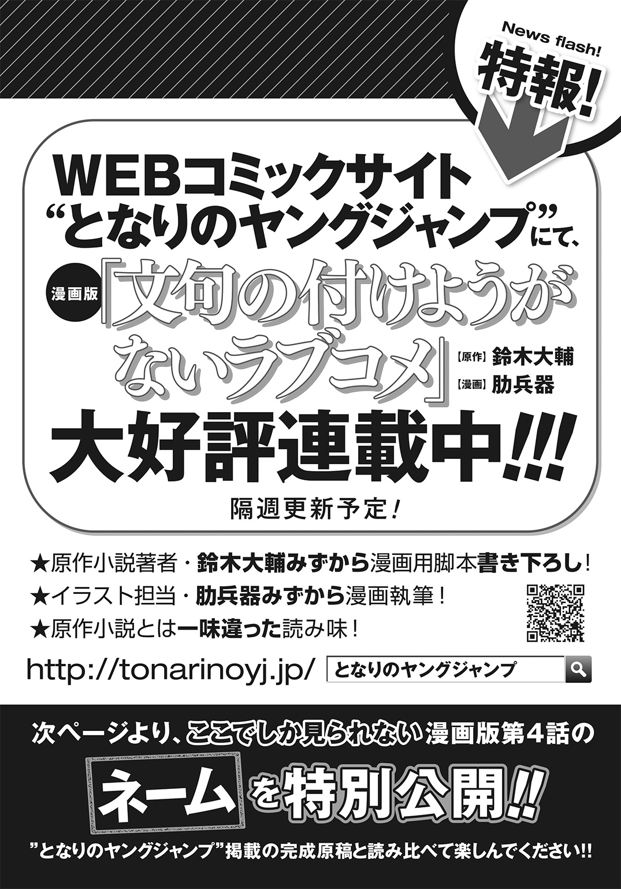

| 文句の付けようがないラブコメ 4 | |
| 鈴木大輔 | |
この本は縦書きでレイアウトされています。
また、ご覧になる機種により、表示の差が認められることがあります。
 ダッシュエックス文庫DIGITAL
ダッシュエックス文庫DIGITAL
文句の付けようがないラブコメ ４
鈴木大輔
第二章
九十九機関とはいったい何なのだろう？
†
この世界における桐島ハルコが『彼ら』を最初に認識したのは、一歳を少し超えた頃である。早熟な彼女は世の中のルールを理解するのも早かった。九十九機関の大まかな全体像を把握し、彼らが『人知れず世の中を裏側から支えている組織』であり、いわゆる『正義の味方』に属するものだと定義するのに時間は掛からなかった。
「その九十九機関にお兄さまは選ばれたわけです」
十年前。
桐島ハルコがまだ桐島ハルコとして覚醒していなかった時代。
機関からの使者がやってきて、桐島ユウキはいわばスカウトされたのだ。『お宅の息子さんを我々に預からせて頂けませんか？』と。
文武両道で人格優秀な兄が彼らに目を付けられるのは当然（とハルコは思っている）だったが、初めはさすがに両親も渋ったらしい。
それもまた当然の流れで、どこかの一流企業からリクルートされたならともかく、どこの馬の骨とも知れない組織からの勧誘である。
しかも謎の組織である。
それもあろうことか〝世界を救っている組織〟だと自称しているのである。
門前払いされてもおかしくない申し出だったはずだ。
だが何度かの交渉の末――両親はその申し出を受けた。
理由は複数だ。交渉の期間中、九十九機関の財力や経済力を様々な形で見せつけられた、というのもある。生贄に捧げられるというならまだしも、世のため人のために粉骨砕身するのであればよかろう、というのもある。何より傾きかけた桐島製薬の事業に出資してくれるとなれば、両親としては断る理由を見つける方が難しい。
そして肝心なこと。
当事者であるユウキが納得した。
まだ六歳だった彼は、自らが置かれた状況を正確に理解した上で、人生を世界平和に捧げる道を選んだのだ。
「さすがはお兄さま、ということです」
兄の活躍はいつ、どの時代であろうと鼻の高いものである。
愛する兄の誇りある献身、そして高潔さ。いずれも国民栄誉賞もの、いやノーベル賞を総なめしてもいい尊さであろう。
まさに英雄。
それでこそ桐島ハルコが心から惚れ抜いた男。
――そう褒めちぎると、兄は決まって苦笑し『そんないいもんじゃない』と謙遜するのだが。謙遜も過ぎれば嫌味になることを知るべきだとハルコは思う。
とはいえ兄の謙遜には理由がないでもない。
正義と平和に身を捧げたものの、たとえば一般人として学校にも通えるし。厳重な情報統制にともなう守秘義務はあれど、普通に桐島家の邸宅で寝起きできるし。ハルコとのお茶会にもおおむね支障はない。制限がないとは言わないが十分な自由があるのだ。
おまけにそこそこの給料まで出る。各種手当などの福利厚生まであって、しかも一流企業と比べても見劣りしない。
『村の消防団とか青年団とか。気分的にはそのくらいのもんだよ』
と言われれば、確かにそういう面もないではないのだった。
「だからといって清廉潔白な組織というわけではありませんけどね」
ハルコは常に心がけている。
正義の味方はいつだって完璧に、あらゆるものを救えるのか？ もちろんそんなことは理論上からして不可能なわけで。
ゆえに兄は警戒しなければならない。常に、決して忘れることなく。
「お兄さまの支えになれるのはわたしだけなんですから。しっかりしなければ」
愛する兄。尊敬する兄。
九十九機関に所属して以降、前にも増して文武が冴え渡った、なんだかんだで妹には甘くやさしい兄。
その兄がこのたび辞令を受け、兄にしか務まらないという役割を任される。
『外道の仕事だよ』
と兄は言った。
『ろくでもなくて恥知らずで、死ぬ時はぜったい地獄行きの。そういう仕事。でも誰かがやらなきゃいけないんだよな。だからやるよ。喜んで俺はやる』
兄の口調は淡々としていて、それでいて静かな緊張にも満ちていて。まるで戦場に赴く前のような、むしろ絞首台の前に立たされて十三階段に足を掛けているような。
桐島ハルコは思う。
兄の立場が厳しいものであることはわかっている。
その兄をして、そこまでの覚悟で挑ませる仕事とはいったい何だろう？
ハルコもまた万能ではない。あの御座所で兄を待っているのがどんな難事業なのか、さすがに想像がつかない。
はたして九十九機関という、結局のところ得体の知れない組織に使われて。兄はいったい何をさせられるというのだろうか？
†
覚えているだけでも既に三十杯。
その三十杯目もまた、目の前でみるみるうちにグラスの中身の嵩が減っていく。
「ぷはぁ」
という間にも飲みきった。
マジかよ、と桐島ユウキは戦慄する。『彼女』が最初の一杯目に口を付けたのは一時間ほど前のこと。つまり二分に一杯のペースでグラスの中身を飲み干している計算になる。おまけにグラスの中身はストレートのスコッチ・ウイスキーときたものだ。
鬼のようなペースである。
もっとも、目の前で杯を重ねる人物は鬼ではなく神なのだが。
「どうした？ 杯が進んでおらぬようだが？」
少女の見た目をした酒豪が流し目でせせら笑う。
笑いながら空になったグラスに新たな液体を注ぐ。
たぷたぷたぷたぷ。
たぷたぷたぷたぷたぷたぷたぷたぷ。
どこまで入れるんだよ――とユウキが戦慄する中、琥珀色のウイスキーは表面張力ぎりぎりまでグラスに満たされる。
ぐいっと呷る。
ぷはあ、と満足げにアルコールくさい息を吐く。
その臭いでユウキは別のものを吐きそうになる。胃がひっくり返りかけ、腹筋に渾身の力を込めてぎりぎりセーフ。
（つーか何なのこの状況？）
首を振り、自らの杯を舐めながらユウキはボヤく。
九十九機関からの辞令を受けて赴任した先、この世を守護する神の御座所にやって来て最初の任務。それは酒盛りであった。
文字どおりの意味である。
酒を飲み、盛り上がるのである。
それも一対一で。
おそろしく美少女な見た目をした神とふたりきりで。
「なんとまあだらしのない」
白い糸切り歯を見せて神は鼻を鳴らし、
「こんな酒に弱い男が役目に就くのはかつてなかったことだ。九十九機関もずいぶん目が曇ったとみえる。貴殿が選ばれた理由がとんとわからぬ」
「......申し訳ありません。私は未成年なもので。酒には慣れておりませんで」
「わたしとその周辺に関する限り、現世の法律など問題にならない」
「それはそうですが」
「そもそも貴殿はすでに人の理を外れている。九十九機関に関わり、わたしに関わった以上、人間どもが定めた法律に意味はない。もはや過去となったルールに自らを縛り付けるなど愚の骨頂ではないか？」
「ルールうんぬんじゃなくて私の肝臓が保たないんです」
「だらしのない」
神は蔑む目をして、
「もともとわたしは人間だ。しかも見ての通りの美少女だ。そんなわたしをひとりで飲ませておいて恥ずかしくないのか」
「そうは仰いますが。貴女は神なわけでして」
「確かにわたしは人ならぬ身だし、普通の人間より頑丈にできている。とはいえ基本的には貴殿らと身体のつくりは変わらぬのだぞ？ まして飲んでいる量を考えればハンデが大きすぎるとは言わさぬ」
「............」
ままよ、とユウキは覚悟を決める。
手に握った杯をぐいっとあおった。
琥珀色の液体がのどを灼く。胃袋が抗議の叫びを上げる。
「くふふ！ やればできるではないか！」
酒豪が相好を崩した。
そんな笑い方をすると、千年を生きる神とは信じられないほど彼女は幼く見える。
「さあ飲めもっと飲め！ こんなものではぜんぜん足りぬ！ わたしを満足させることができなければ〝務め〟を果たしてやらぬぞ!?」
......どうしてこんな状況になっているのか。
手元の杯になみなみと酒が注がれるのを見つめながらユウキは考える。
自分の役目は理解しているつもりだ。
神鳴沢セカイ。
あまねく絶え間なく生み出される不浄を清め、時間と空間を維持し、存続させることのできるただひとりの存在。
彼女に〝仕事〟をさせること――つまりは世界を守ることこそ、桐島ユウキの仕事に他ならないはずである。
少なくとも、だ。
九十九機関という、所属していてさえ実態の掴みきれない組織に身を置き、日々研鑽し、いざ有事の際にそなえてきたのは、限界量を超えるアルコールに耐えるためではないはずだった。というかそういうことであれば最初からそういう訓練を積ませてほしかった。
「愚痴が多いな貴殿は」
鼻を鳴らす音がした。
くらくらする頭を振り、ユウキは神に視線をやる。
「わたしがどんな形で『務め』をやらされているかは知っているだろう？ それに比べれば、貴殿がいま現在味わっている酩酊など物の数ではないはずだ」
確かに知っている。
東京二十四区、総武線沿いの某所に建つ神の御座所。
ここには神鳴沢セカイの他にも人智を超えたモノがある。
階段を下った地下空間に、さして厳重に秘匿されるわけでもなく。一体いつから存在し、どこの何者が作ったかも知れない、人智を超えた場所が存在するという。
その扉を越えた向こうはこの世ならざる異界であり、人の身では耐えることのできないあらゆる業苦があるのだという。
その業苦に、神はたったひとりで耐え抜くのだという。
「地獄だぞ」
グラスを揺らしながら神は言う。
「まさしく地獄だあれは。身体をな、いや魂そのものをだな。あらゆる痛みで責め抜かれるのだ。切られる、潰される、削られる。焼かれる、折られる、捩られる。ありとあらゆる痛みだ。本当に。わかるか貴殿？」
「............」
「肉体的な痛みだけならまだマシだ。負の感情もまた、これもありとあらゆるものを味わわされる。悲しかったり苦しかったり切なかったり寂しかったり――それこそ身を引き裂かれるような、脳みそを引きずり出されるような。それでいて叫び出すことも、胸を掻きむしることさえもできぬ。想像できるか？」
「............」
そちらこそ愚痴が多いのでは？ と酩酊した頭で思う。
声に出さない代わりにウイスキーをぐいっとあおる。
「見事！」
神が快哉を上げる。
何度も手を叩きあわせ、ユウキの杯に容赦なく追加をそそぐ。
「さあさあ足りぬぞまだ足りぬ！ 底力を見せてみよ九十九機関の犬よ！ このわたしを首尾よく潰すことができたなら、貴殿らの望み通りに世界を救ってやろうではないか！」
......好き放題に煽る声をユウキは聞いていなかった。否、聞くことができなかった。酒は聴覚にまで回り、もはや正気を保つのも困難になっている。
ちぎれそうになる意識の中で彼は自問自答していた。
そんな馬鹿な、と。
こんな話は聞かされてない。もとより九十九機関は情報開示に消極的な組織だが、事は世界の存亡に関わるのだ。果たして納得していいものだろうか。
いやしかし待て。
考えてもみればだ。
こんな話は聞かされてなかったが、今にして思えば聞かせられなかったというのが正解のように思える。
だってそうではないか。
『桐島ユウキの役目は神様と飲み比べをして勝つことである』
だなんて。
普通の感覚をもった上司なら、ちょっと部下に言いにくいのも道理ではないか。
†
「そうなんだよねー。言いにくかったんだよねー」
私立叢雲学園高等部。二年Ａ組の教室。
他のクラスメイトたちが下校した放課後である。
「でもまあホラ、わたしの気持ちもわかってくれるとうれしいっていうかー。ユウキくんにやってもらうのが体育会系サークルの飲み会みたいな仕事だなんて、私の口からはねー、ちょっとね。言いにくかったんです」
「困ります。言いにくいからといって言わずに済ますのはいかがなものかと」
「あ、こらユウキくん？ 嫌味ったらしくこれみよがしに敬語になるのやめてよね。学校では普通にしゃべってよ普通に。わたしらここでは同級生なんだから」
「............」
ぺろりと舌を出してウインクする上司にユウキはため息をつき、授業用のプリントを仕分けする作業に戻った。
放課後の教室には、九十九機関に所属する若いふたりの姿があるのみ。窓の外からは、野球やらサッカーやらの運動部が練習する声がひっきりなしに聞こえてくる。
「まあいいけどさ」
口調を戻してユウキはもういちどため息。
「あらかじめ聞かされてたとしてもたぶん結果は同じだったからな。あの神様の飲ませ方は遠慮も手加減もないし。潰されてたのはどうせ同じだろうし」
「でしょでしょ？」
「だからといって、あなたに対する恨みがましい気持ちが消えるわけじゃありません。ええこれっぽちも」
「あ。まーた敬語になってる。意外と根に持つよねユウキくんって」
「そりゃそうだよ。二日酔いで学校に来なきゃいけない身にもなってくれよ」
「まあまあ。機嫌直してよ。なんかオゴるからさ。ね？」
拝み倒す小岩井クルミをジト目で見て、もう一度ため息をつくユウキだった。
もちろん頭ではわかっている。
上司である彼女にクレームを付けたところで何も解決しない。そもそも小岩井クルミはメッセンジャーないしは監視の役割を担ってユウキと行動を共にしているだけであって、この件に関する決定権は何も持っていないはずであった。
あくまでも一応は上司、ということになっているというか。
このあたり言葉では説明しづらい。
そもそも九十九機関というものが説明しづらい存在だ。
なにせ組織といいつつも中枢の存在しない、原則的には上下関係さえ存在しない人材の集合体である。
基本的には大多数の構成員による合議制で意思決定はなされるが、その意思決定を管理・運営する部署はない。
本来なら組織の体を成さないような構成であるが、構成員のそれぞれがきわめて多岐にわたる高い技能を有するゆえに成り立っていると言える。組織でありながら根本的には個の力に依存しているという構図は、たとえばプロスポーツの世界にはままあることだが。世界を裏からコントロールする組織がそれを地でいくというのは、なんとも奇妙な話ではあった。
「ま、基本的にわたしら九十九機関ってのは、見ざる言わざる聞かざる、だから。わたしらがこうやって身分を明かして同じ学校に通ってるのもさ、本来はすっごいイレギュラーだしね」
とクルミは言う。
組織の体を成さない以上、縦の関わりも横の関わりも希薄なわけで、九十九機関の構成員同士は不干渉が常態なのだ。個々の判断で、しかしひとつの目的のためにそろって行動する――人体で例えれば免疫機能に相当するのが彼らなのだった。
「まあとりあえずさ。今のところ合格ってことになるみたいよ」
太鼓判を押すクルミ。
「酔い潰れはしちゃったけど、ユウキくんの根性に免じて神様は仕事してくれたみたいだしね。だったらうん、オーケーなんじゃない？」
「結果オーライってか？」
「そうそう。大事だよその考え方」
「その結果オーライのために、俺はまた牛か馬みたいに飲まされるわけか」
「胃薬は用意するよ。あと腕のいい医者も」
「どっちも間に合ってるよ。製薬会社だからなウチの実家は」
「まあうらやましいこと。これだからお坊ちゃんは」
「なんなら代わろうか？」
「遠慮しまーす。わたしお酒飲めないし」
当然そういう答えが返ってくるのだった。
逆の立場だったらユウキだって同じ答えを返すだろう。九十九機関という超法規的な組織に身を置いているからいいものの、本来の彼はれっきとした高校生である。
「とりあえずですね」
プリントの仕分けをする作業に戻りながらクルミは言う。
「今のところユウキくんの仕事ぶりは悪くないですから。この調子でお願いします」
「......これから毎日神様のところに通うことになるわけか？」
「そこはお任せ。ユウキくんの裁量でどうぞ。とりあえず神様の仕事は毎日あるわけじゃないからさ、ほどほどのタイミングでほどほどに結果を出してくれればいいです。結果を出す方法も問いません」
「むしろやりにくいんだけどな、そういうユルい条件の方が」
渋い顔をするユウキ。
クルミは片目を閉じて、
「とにかくまあ、放っておくとあの神様は仕事しないわけですから。あの手この手を使ってどうにか仕事をさせるよーに。繰り返しになるけど方法は問わないし、結果さえ出してくれれば文句も言わないよ。バックアップは全力でやらせてもらうから、とにかくまあがんばってみてちょーだいな」
「了解」
ユウキは短く返す。
もとより拒否する選択肢はないのだ。構成員の独立性が強いからこそ、一糸乱れぬ統率が肝要であり、個人の意思が組織の意思より優先されることはないし、またあり得てはならない。そのことは、彼らの一員に加わる時点で徹底的に叩き込まれている。
「でまあ、そのことはわかったとしてだ、小岩井さん」
「はいはい」
「いちおう聞いておきたいことがあるんだけど」
「うんうん」
「期間はいつまで、ってことになるんだ？ 俺があの神様を担当する期間ってのは」
「そりゃ決まってるでしょ」
むしろ不思議そうな顔で上司は言う。
「ユウキくんが死ぬまでだよ。歴代のお役目に就いてた人たちは、みんな死ぬまで務めを果たしたからね。というわけでがんばって。応援してるよん」
第三章
飛行機を乗り継いで三十時間。
それでもほぼ最短のコースであり、しかもエコノミーではなくビジネスクラスを用意されたのだが。空港に降り立ってもまだユウキの『なぜ？』という思いは募っていた。
南米カリブ海。
珊瑚の海に囲まれた熱帯の島、マルティニーク。
ヨーロッパ某大国の海外県であり、クリストファー・コロンブスをして『この世で最も美しい』と言わしめた、天国に最も近い場所のひとつ。
そこに桐島ユウキは立っていた。
残念ながら観光ではない。
まして修学旅行でもない。
仕事である。
空港で待ち合わせた現地のガイドがユウキの背中を叩き、「なに暗い顔してんだ！」と白い歯を見せて笑った。「天国に来ておいてショボくれるな。もっとテンション上げろ」――なまりのキツい英語は聞き取りづらいが、どうやらそういう意味のことを言っているらしかった。
「はは。まあそっすネ」
愛想笑いで返しておく。
実際いい島なのだここは。
エメラルドグリーンの海。水晶を撒いたようなきらめく砂浜。
物価がやや高いのは玉に瑕だが、そのぶん治安は悪くない。南国らしくスパイスをたっぷり効かせた料理の味も中々のものだ。
観光地としての質は高い。
普通ならもっとテンションを上げていい場面である。ガイドの言い分は正しい。たとえ仕事であろうとこれだけのシチュエーションがそろえば気分は上がる。
そう。ただの仕事であればだ。
何らかのビジネスに来たのであれば――産業の誘致や投資、あるいは単なる接待でもいい、そういう類であればまだしもよかった。
マルティニーク島には観光の他にも有名な産業があった。
ラム酒の生産である。
†
「桐島ユウキ。貴殿はつまらぬ男だな」
神様はバッサリと切り捨ててくれた。
いつもどおり度数の高いスピリッツを片手に、葉巻をすぱすぱ吹かしながら。神鳴沢セカイは虫けらを見る目でユウキを一瞥し、
「貴殿に与えられた仕事はごく簡単なもののはず。わたしと酒を飲む、ただそれだけのことでこの世界を救えるのだぞ？ 簡単なだけでなくリーズナブルな仕事であろう？ いったい何の不満があるというのか」
酒を飲む量と頻度だ。
......と即答したいところだったが、さしあたりそれはこらえた。ただでさえ機嫌の悪い神様にこれ以上へそを曲げられたら困る。
「近ごろ胃の調子が」
ユウキは弁明した。
「あまり優れないものでして」
「ほほう？」
神は冷え切った声で、
「なるほどな。酒を飲まぬのは、貴殿の身体とこの世界全体を天秤にかけた結果、というわけだ。貴殿の価値は世界と肩を並べるほど高いとみえる」
「いえ。そのようなことは」
「貴殿、自らの立場を自覚しているか？」
「そのつもりです」
「そうは思えぬな」
すぱあ、と葉巻の煙をユウキに吹きかける。
床に跪く彼の前で、見せつけるように脚を組み直し、
「わたしは貴殿らにいいように使われるだけの存在でしかないが。わたしがその気になればこの世界もろとも消え去ることはできるぞ。こんなせまい屋敷に縛り付けられ、正気を保てぬような務めを押しつけられ、そのうえ酒すらも思うように楽しめぬとあれば、いったい何を好きこのんでわたしはこの現世にしがみつかねばならぬのだ？」
「それはもう。重々に」
「重々？ いったい何が重々なのだ？ 答えよ」
「申し訳ありません」
「謝罪など求めておらぬ。答えよ」
「............」
参ったな、とユウキは思う。
もとより反論の余地はない。神の主張はもっともである。彼女が仕事をしてくれるのであれば、肝臓のひとつやふたつ壊れても飲むべきであった。
が、しかし。
果たしてそれでいいものかどうか。
任についてまだ日は浅いが、ユウキは彼なりに模索しているのである。この神様との付き合い方というものを。
ただ酒を飲むのに付き合わされる――現時点における彼女からの要求はそれだけだが。何か他に、もう少し前向きな何かがないものか。肝臓が壊れたら壊れたで、また次の犠牲者が出るだけだし。
......という意味のことを説明すると、神鳴沢セカイは「ふむ」と鼻を膨らませて、
「なるほど。何も考えてないわけではない、ということは理解した」
「恐れ入ります」
「わたしとしてはむしろ貴殿に楽をさせているつもりだったのだがな。酒をひたすら呷るだけでは仕事のうちに入らぬ、もっと気の利いたことをやらせろというわけだ。その意気やよし」
え？
という顔で神を見上げるユウキ。
神は大いにうなずいて、
「では貴殿の為人を測ってみるとしよう。それはまた同時に、わたしが血ヘドを吐く思いでこの世界の形を保ち続けるだけの価値があるかもまた、測れるということでもある。一石二鳥というわけだな」
妙な流れになってしまった。
とはいえ言いだした手前、後には退けそうにない。
「おっしゃることはわかりました。それで私は何をすれば？」
「ふむ。そうだな......」
思案顔をする神鳴沢セカイ。
そうすることしばし。
やがて彼女はにんまり笑って言ったのだ。
†
「『わたしが納得するだけの酒を探してこい』だとさ」
さびの浮いたトラックに揺られながらユウキはボヤいた。
「それも『貴殿の手で、貴殿の足で』だそうで」
「そりゃあね。ユウキくんの為人を測る、って言ってるんだもの」
隣の席で同行者の小岩井クルミが笑う。
「ユウキくんが自分で探さなきゃ意味ないよね。もちろん機関の財力なりコネクションなりを使えば、最高のお酒を集めることはできるだろうけど。神様が言ってるのはそういうことじゃないよね」
「そりゃわかってるけど」
「なんていうかな。料理ってただ美味しいだけじゃなくて、愛情っていうスパイスが必要でしょ？ それと同じじゃないかな」
「それもわかってる」
ボヤき顔のまま車窓の外を眺める。
赤土がむき出した農道の左右は、見渡す限りのさとうきび畑。伸び伸びと育った長い葉が生い茂る光景は、窓を閉じていても青くさい臭いが漂ってきそうだ。
「いいんじゃない？ なんか神様らしい無理難題で」
かぶっている麦わら帽子をいじりながらクルミ。
「神話とか昔話に出てくる神様ってさ、だいたい無茶なことばっか言うし。何考えてるかもよくわかんないし。まあでも当然なんだよ。人間のかたちはしてるけど人間じゃないんだからさ、神鳴沢セカイってひとは」
「もともと人間だろ？」
「千年生きてたらもう人間じゃないよ」
「............」
ユウキは反論しなかった。
マルティニークの日差しが容赦なく肌を焼き付ける。日焼け止めを塗っていなかったから、故国に帰るころには現地人と見まがう色になっているだろう。
「ちょっと考えすぎかな」
クルミは肩をすくめて、
「もうちょっと気楽にやってもいいんじゃない？ でないと身体が持たないよ。まだまだ先は長いんだからさ」
「そういうもんかな」
「そういうもんだよ。わたしらって、言ってみればわがままお嬢さまの御用聞きなわけ。なんか言われたらハイハイ言うこと聞いてればいいわけ。というかそうしないとこの世界が吹き飛んじゃうわけ」
一理あるのをユウキは認めた。
神様との付き合い方を考える、というのであれば、それこそ肩の力を抜くことも必要になってくるだろう。張り詰めた神経で向き合い続けていればどこかで限界はくる。
（さすがだな小岩井さん）
クルミもまたこう見えて、鍛えに鍛え抜かれた超一流のエージェントである。のほほんとしているが発言は的確だ。
「ま、いいじゃないですかあ」
のほほんとクルミが言う。
「こうして公の任務として、堂々とデートできるんですから。それもこんなキレイな南の島でさ。わたし満足です」
「......なんか、心の中でほめたのが失敗だったと思える発言だな」
「あとさ、わたし新しい水着買ってきたからさー。ビーチに行こうよビーチに。ホテルの前にきれいなのがあったでしょ。あれ行こあれ」
「はいはい。仕事が終わったら考えます。あとデートじゃないですからねこれ」
赤土とさとうきび畑の果てに建物が見えてきた。
さして大きくもなく、年季の入った木造の白壁。
今回の目的地であり、戦いの場である。
†
結論から言って交渉は難航した。
それも大のつく難航であった。
ユウキが狙いを付けたのは、決して生産量の多くはない、マルティニークの中でもことさら小規模な、ほとんど名前も知られていない蒸留所だった。
必死になってあちこちを駆け回って集めた情報によれば、ごく近年になってその零細蒸留所が見直されつつあるというのだが。
「なーかなかきーびしーっすねえー」
クルミが率直な感想を述べる。
実際、ユウキの心境も『きーびしーっすねえー』であった。
礼は尽くしたゆえ話こそ聞いてもらえたものの、蒸留所のオーナー兼社長は頑として首を縦に振ってくれなかったのである。
「あの手の家族経営のところはさ」
トロピカルフルーツがたっぷり入ったカクテルを舐めながら、
「やっぱガンコだよね。昔からの取引先との義理があるから、って言って。簡単には譲ってくれないもんね」
「............」
ユウキは無言でピーナッツの殻をむいている。
夜。滞在先のホテルにあるビーチ。
クルミは宣言どおりの水着姿。ユウキも付き合わされて海パン姿だ。
「どうするユウキくん？ いろんな方向から攻めてみることはできるけど」
「たとえば？」
「この島のえらい人に働きかける、ってのがいちばん普通っぽい手段かな。あとはもう手っ取り早くお金を掛けちゃうとかね」
「金を積んだだけじゃ譲ってくれないだろ、ああいうタイプの人たちって」
「お酒を売ってもらうんじゃなくてさ。蒸留所ごと買収すればいい、って話なんだけど」
「............」
「あとはもっと手っ取り早く、蒸留所を襲って盗んじゃうとかね。後始末の用意さえちゃんとしておけば問題ないでしょ」
「............」
「まあユウキくんはやらないだろうけどさ」
「わかってるなら聞くなよ。料理はただ美味しいだけじゃダメだ、スパイスが大事なんだ、って言ってたのは小岩井さんだろ」
「血塗られた由来を持つお酒、ってのも十分にスパイス効いてると思うけどな」
「............」
「はいはい。そんな不機嫌な顔しなーい」
ひらひら手を振っておちゃらけるクルミ。
ユウキはむっつり顔でナッツを頬張る。
「ま、とりあえず今夜はゆっくりしようよ。こうやってくつろいで、英気を養って、それから考えても遅くないよ」
「......遊びに来てるんじゃないんだけどな」
「おカタいなー。いいじゃんか別にー。せっかくのチャンスなんだしさ。こんなラッキーは人生を百万回くり返したって巡り会えないよ？ 悪いけど楽しみ尽くしますねわたしは。しゃぶり尽くしますよ徹底的にこのデートを」
「だからデートじゃないってのに」
浅黒い肌のボーイがやってきて、クルミのグラスを取り替えた。鮮やかなブルーのカクテルである。
「ユウキくん」
「ん？」
「なんか焦ってる？」
「そう見える？」
「うん。ちょっとね」
「そっか。そういうつもりはないんだけど」
ナッツの殻をむく手を止めて夜空を見上げた。
白い砂をちりばめたような満天の星。ビーチからは柔らかなさざ波の音。
「なんかわからんけど。急がなきゃ、って気がする」
「ほほう？」
「急がなきゃ間に合わなくなるような気がさ。なんか妙にするんだ。ホントになんでかわからんのだけど」
「なんだろね？ 神様の担当を任されたから、そのプレッシャー？ んーでもユウキくんってそんなに神経細い方じゃないしなー」
うまそうにカクテルをすすりながら「んっ」と伸びをして、
「まーなんにしてもさ。一日とか二日とかで何とかなるもんじゃないでしょ？ 焦っても無駄無駄」
「わかってる」
「そもそも茶番みたいなもんだしね、こんな南の島くんだりまでのこのこ来てること自体が。ユウキくんもわかってると思うけどさ」
それにはユウキは答えなかった。
代わりに「ハルコも連れてきたかったな、どうせなら」と言った。
クルミは「まあ遊びじゃないってことで」と返す。
穏やかに更けていく夜は今日ぐらいのものだろう。
明日からは真剣勝負が始まる。神への捧げものを手に入れるための。
†
「――で、これがその酒か」
東京二十四区、神の御座所。
テーブルの上に置かれた酒瓶を眺めて、神鳴沢セカイは目を細めた。
マルティニークに飛んではや二週間。ようやく帰国し、休む間もなくその足でここまで訪れたのである。
「それにしても待ちくたびれたぞ？」
チェアに腰掛けて悠然と足を組み、神は不平をもらす。
「二週間も待たされるとはちょっと想像していなかったな。待ちくたびれて務めを果たす気がなくなっても文句は言わさぬが？」
「最高の酒を、とのことでしたから」
頭を垂れながらユウキは弁明する。
「それなりの手順が必要でした。お待たせしたことについては謝罪いたしますが、それだけの価値はあったかと」
「言うではないか」
鼻を鳴らす神鳴沢セカイだが。酒瓶を眺める目は好奇にあふれている。
「いい色だ」
と彼女は言う。
「よい具合に樽の影響が出ているな。少しばかり赤みがかった褐色が美しい。かなりの年代物であろうが......」
「とある蒸留所のファーストビンテージです」
「何年ものだ？」
「樽の中で五十年、そのあとガラス製の瓶に移し替えてさらに五十年。合わせて百年もののラムになります」
「ほうほう」
「ちなみにこのビンテージのラムは、その蒸留所のプライベートストックでして。いま目の前にあるボトルを合わせても世界に二本しかありません。そのうちの一本を無理を言って譲っていただきました」
「ほう」
神の声に少しだけおどろきが混じる。
「なるほど、確かに最高の酒と呼んでいいものなのだろう。二週間も待たされただけの価値はあるやもしれぬ」
「恐れ入ります」
「で？ それをどうやって手に入れた？」
意地悪げに笑う銀髪の少女。
「それほど貴重な酒なのだ、およそまともな方法では手に入るまい。金に物を言わせたか、権力に物を言わせたか、それとも暴力に物を言わせたか」
「いいえ。合法的な手段で譲ってもらいました。それもタダで」
「ふむ。まあ九十九機関であれば、その程度のコネにたどり着くのはたやすいか」
「いいえ。今回はそういうわけでも」
「ほほう」
神は興味深げに、
「ではどうやって？」
「友だちになりました」
「友だち......？」
首をかしげ、
「友だちになったとはつまり、その蒸留所のオーナーとか？」
「はい」
「若いのかその者は。貴殿と同じくらいに」
「いいえ。今年で五十六歳になると言っていました」
「............」
なんとも言えない微妙な表情をする神鳴沢セカイ。
ユウキは説明を付け足して、
「正確に言えば、オーナーの家族全員と友人になりました。あとは友人のよしみでどうにか譲ってもらった、という次第です。その代わりに、というのも妙な話ですが、彼らの一族に何かあれば私は何をおいても駆けつけることになるでしょうね。そういう関係を彼らと築いてきました」
「二週間でか？」
「はい」
「できるものなのか？ そういう関係が。そんな短い間で」
「運がよかったと思います」
というのがユウキの正直なところだ。
蒸留所一家の家長は気むずかしい職人肌だったが、腹を割って懐に飛び込めば話のわからない男ではなかった。幸いにして、その妻も息子も娘も最良の友人となれる人々であった。いったん心を許してもらえさえすれば。
「包み隠さずいろんなことを話して、いっしょに笑って怒って悲しんで――それでも解り合えない相手はいるものですが。彼らは違いましたから」
「ふむ。そういうものか」
「それと酒が役に立ちました」
「酒？」
「ええ。彼らの家族とたくさん酒を飲みました。こちらが手土産として持ち込んだ酒も、それともちろん彼らが丹精込めて作った酒も」
酒は人生の潤滑油である。
もちろん〝上手に付き合いさえすれば〟という前提はあるが、この短期間でユウキは嫌というほど経験を積んできた。
「彼らの作っている酒に敬意を表して。興味をもっていろいろ訊いたりして。少なくともラム酒についてだけは人並み以上に詳しくなりましたよ」
「そうか」
神は大いにうなずいた。
「だいたい想像はつく。今わたしの目の前にあるボトルは、貴殿の血と汗と涙の結晶というわけだな」
「幸いです。そう理解して頂けるなら」
「よかろう」
もう一度うなずいて、
「由来はわかった。十分に価値があると認める」
「ありがとうございます」
「ではさっそく味を確かめてみよう。注いでくれ」
言われてユウキはボトルのコルクを抜いた。
少し前に比べればずいぶん慣れた手つき。テイスティンググラスに注がれる酒。まるで宝石をそのまま液体にしたような。
たちまち立ち上る芳香。
部屋全体に、百年におよぶ熟成の封印が解かれ、花咲き乱れる庭園のように様々な香りが空気に遊ぶ。
「うむ」
目を細め、銀髪の少女がグラスを手に取る。
何度か酒を揺らし、さらに香りを楽しんでから。
ほんのわずかだけくちびるを濡らした。
「――――」
目を閉じる。
遠い過去に思いをはせるように。あるいは遙か南の楽園を見透かすように。
間が空いた。
ゆっくりと目を開け、しみじみ漏らす。
「見事だ」
グラスの中身に視線を落とす。
まるで愛しい幼子を見るまなざしで。
「この酒を小賢しい言葉で表そうとするのは野暮というものだな。見事である」
それから彼女は別のグラスを用意し、酒を注ぐ。
「桐島ユウキよ」
「はい」
「貴殿も飲め」
「............」
「そんな顔をするな。わたしとて酒に対する敬意はわきまえているつもりだ」
笑って、
「これほどの酒を鯨のように飲み干したりはせぬ。たっぷり時間をかけて楽しむつもりだ。そして貴殿にもその権利はある」
「ですが」
「むしろ義務というべきだな。この酒は貴殿の大事な友人が託したものだろう？」
ユウキはグラスを手に取った。
芳香が鼻をくすぐる。
友人の蒸留所が素晴らしい生産者であることは自明だが、それでもこの酒は格が違った。素人に毛が生えた程度のユウキでもはっきりわかるほど。
「貴殿を初めとして、九十九機関はわたしの敵だ」
神は言う。
「だが敵に対して払うべき敬意はある。酒に対して払うべき敬意も言わずもがな。これだけの酒を前にして我らができることは、ただ味わうことのみだ。わかるか桐島ユウキ？」
「はい」
神は恍惚の表情でグラスを傾ける。それから「貴殿という男が少しは理解できた」と言った。「わたしが守っているものの価値もまた、これで少しは確かめられる」とも言った。
ユウキもまた心情は同じだった。
自らの役目の価値。
手に入れたものの大きさ。
それらがすべて、喉を灼く数ミリリットルの液体に凝縮されているように思う。
季節は春の盛り。
桐島ユウキが神鳴沢セカイと出会ってまだ一ヶ月。
第四章
気づくとソファーに寝かされていた。
「――うおっ!?」
あわてて起き上がる。
と同時に走る頭痛。桐島ユウキはうめき、頭を抱えた。
頭を抱えて気づく目まい。そして吐き気。
「ええと......」
混濁する意識で周囲に視線を走らせる。
クラシカルな模様の壁紙。
白い漆喰で塗った天井。
手延べガラスの窓から見える景色は、初夏の花々に彩られる、手入れの行き届いた庭。
「ああ」
そっか、と頭を振る。
いつものパターンだった。この神の御座所で、いったい何度おなじ景色を見たことか。
「おはようございます」
声がした。
いつの間に居たのか。
開いたドアを挟んで、メイド服姿の、これまた見慣れた人物が立っている。
「お目覚めの具合はいかがでしょうか？」
「......最悪です。残念ながら」
「それはようございました」
にこりと微笑んで、
「まだ身体が正常な反応をしている証拠です。死んでもおかしくないだけの量を飲まれましたからね」
言いながらおチヨはお茶の準備をしてくれる。
カップに注がれるハーブティーの香り。もうすっかり嗅ぎ飽きた香りだ。二日酔いに効くのだとか。
「ありがとうございます」
礼を言ってカップを手に取り、ひとくちすする。
苦みと酸味のほどよいバランスが胃腸にしみわたる。ほんのわずかな量を口に含んだだけで早くも効果が出てきた気がする。
すすりながら記憶を整理する。
昨晩もまた酒宴であった。
神とふたりきりの酒宴だ。
テキーラの瓶を一本あけたところまでは覚えているのだが、そこから先の展開はさてどうだったのか。いつも通りであれば、その先はフォアグラ用のガチョウみたいに飲まされ、当然な流れで潰されたはずで、
「ご安心ください」
ハーブティーに続いて薬も用意しながらおチヨが言う。
「我が主は無事にお務めを終えております。世はすべてこともなし、です」
二日酔いに効く丸薬。それと栄養ドリンク。どちらもメイドの特製品だ。
「神はいま何をして？」
「眠っておられます」
銀髪少女の〝お務め〟は心身ともに激しい消耗を要する。数日間眠り続けることも珍しくはない。
「それじゃすいませんが」
ユウキは苦い薬を飲み干してから、
「ちょっとこのまましばらく休ませてもらいます。毎度毎度で恐縮ですが」
「承知いたしました」
メイドはにこりと微笑み、
「ではわたしはこれにて失礼いたします。ご用の際は遠慮なくお声がけを」
「あ。でもその前に少し」
「はい？」
「話をしませんか。お茶でも飲みながら」
「話を？」
「ええ。私がここに来るようになってそれなりに経ちますが。大先輩のあなたとまだろくな話ができていない」
「でしょうね。基本的に貴方様はいつも二日酔いで潰れていらっしゃいますから」
「なのでここらでぼちぼち」
「せっかくのお誘いですが。わたしにもいろいろ仕事がありますので」
「では正式に申し込みます。この屋敷に担当として派遣されてきた者として、神に直接仕えるあなたに対して正式に。聞かせてもらえませんかいろいろと」
おチヨはソファに腰を下ろした。
にこりと微笑む。
相変わらず鉄壁の微笑み。
「さしてお話しできることもないかと思いますが。ユウキ様が必要とおっしゃるなら」
「恐縮です」
「それで、どのようなお話をすればよろしいので？」
「聞きたいことはいろいろありますが――」
ハーブティーの残りをちびちびやりながら、
「たとえばおチヨさん。あなたは九十九機関の中でも特別な存在です」
「はい」
「記録に残る以前から神に仕えていらっしゃる。姿形も変わらず、衰えることもなく、少なくとも何百年ものあいだ」
「はい」
「人間じゃないですよね？」
「元は人間だったのだと思いますよ」
自らのカップにハーブティーをいれながら、おチヨはやんわり答える。
「ですがいつのころからか、わたしは人間であることをやめたようです。自然とそうなったのか、自らそうしたのか。そのあたりはよく覚えておりませんが」
「覚えてない？」
「昔の記憶がほとんどありませんので。まあ人間、長く生きているとそういうこともあるのかと」
言いながらハーブティーの香りを楽しんでいる。
そんな姿はむしろ、このメイドにしてはめずらしく、ひどく人間っぽい仕草にも見えるのだが、
「今のわたしはそこらにある道具と変わりません。たとえばこうして使っているティーセットと同じく、ただ目的を果たすためだけのモノ。これまでもこれからも自らの務めを全うします。我が主と同じように」
「務めというと？」
「我が主にこの世界を守っていただく。そのためにできることをわたしは最大限にいたします。わたしのすべてを捧げて。それが約束ですから」
「約束？」
「我が主とのです。わたしが覚えているただひとつのものです」
微笑みながらおチヨは窓の外に目を向ける。
庭に降り注ぐまぶしい陽光。若々しい緑。色とりどりの花々。
今日も世界は美しい。少なくともこの屋敷から見える範囲においては。
「何があってもこの世界を守りたいと。我が主はおっしゃいました。わたしは我が主の望みを忠実に叶え続ける。そのためにこうして生き長らえております」
ユウキに視線を戻す。
そして微笑む。ふたたびの鉄壁。
「どうかユウキ様も自らの務めをお忘れなきよう。結果としてそれが、我が主の望みにもつながるでしょうから」
†
「――あんまり関わらない方がいいよー、あの人には」
「なんで？」
「怖いから」
ユウキの反問に、小岩井クルミは簡潔に答えた。
「むしろ逆に訊きたいけど。怖くないのユウキくんは？ あのおチヨさんが」
「いや怖いけど」
「でしょー？」
言ってクルミはストローに口を付ける。
パイナップルを丸ごとくり抜いた器に入った液体は、テーブルを挟んでユウキの席にまで甘い香りを運んでくる。いかにも南国らしい豪快なドリンクだ。
「あの人って機関の中でも特別だし。人間じゃないし。あとめっちゃ強いと思う。ユウキくんの方がよくわかってるでしょ？」
「だな。雰囲気がハンパないよな。上手く隠してるけど」
うなずき、ユウキは水滴の浮いたグラスをあおる。これまた南国らしい、ライムのよく効いたさわやかなジュースが喉を潤す。清涼感たっぷりの液体は、照りつける太陽に焼かれた肌まで冷やしてくれそうだ。
北米はメキシコ合衆国、ハリスコ州。
ユウキとクルミはふたたび異国の地に足を踏み入れている。
「ま、とりあえず殺されないようにね」
とクルミは忠告する。
「ユウキくんが生きててくれるならわたしとしては問題ないから。そこだけは気をつけて。死んだらさすがにやり直しできないんで」
「......そこまでの危険はないと思うけどな。さすがに。いくらあのメイドさんでも」
「ユウキくんさ」
「うん？」
「もし本気でケンカしたとして。おチヨさんに勝てる？」
「いや。自信ないな。さすがに」
「でしょ？ だったら気をつけるに越したことないよ。わたしらってそういうジャンルの業界にいるんだし」
「でもあの人だって九十九機関なわけでさ」
「だから大丈夫だって？ それは甘いと言わざるを得ないなーさすがに。変な先入観は持たない方がいいよ」
「ふむ」
指摘に理があることをユウキは認めた。
ユウキのような立場にある人間にとって、用心深さはいつも共にあらねばならない。あのメイドは警戒の対象であるべきだった。理解も把握もできていない以上、そうするのが当然の流れなのだ。
おチヨだけではない。
そもそも九十九機関そのものが謎の組織だ。その内部に身を置いているユウキやクルミからみても――いや、彼らだけでなくあらゆる構成員にとってさえ――たとえばあのおチヨですらも、全体を把握することは不可能。
ゆえに備えあれば憂いなし。
「で」
飾り付けのパイナップルを囓りながら、クルミは周囲の景色を眺める。
乾いた大地を走る国道沿い。
カフェテリアを覆い尽くすように広がるのは見渡す限りの農園で。ノコギリのような葉を持つ巨大な蘭の一種が整然と植えられている。
「またトモダチ作戦でいくの？」
「そうなるかな」
ジュースのグラスを指で撫でつつ、ユウキもクルミと同じ景色を眺める。
「人類皆友人。仲良くなれば何でもできる。たぶん」
「楽観的だねえ」
「じゃないとやってられん」
「そりゃまあそうか」
ボヤきもやむなし、という具合にクルミは肩をすくめた。
ハリスコ州にはとある特産品がある。
竜舌蘭から採れる樹液を発酵させ、蒸留させて作る、世界中で愛される美酒。
「ラムの次はテキーラだもんねー」
クルミが青い空を見上げながら、
「なかなか人使いが荒いね神様」
「だな」
「まあいいけどねー。それで仕事してくれるならさー」
「うん。安いもんだ」
「そのたびにユウキくんが世界のどこかを走り回るわけだけど」
「ご指名とあらばしょうがない」
「好きだよねーあの神様。ユウキくんの器を測るの」
言われてユウキは微妙な表情をする。
はたして喜んでいいものかどうか。神から与えられた試練に耐えて成果を上げる、と言えば聞こえはいいが。要するに使い走りである。たとえ名誉なことであれ。
「まあ上手くいってるよ、今のところ」
とクルミは評価する。
「さしあたり神様は仕事してくれてるわけで。世界はこうして今日も平和なわけで。それさえできてるならわたしら何の文句もないわけで」
「こんなに世界のあちこちを飛び回るとは思ってなかったけどな」
「まー前向きに考えようよ。わたしはね、実は神様っていいヒトなんじゃないかって思い始めてたり」
「どのへんが？」
「だってほら、今回もさ。こうしてあたしらのデートに一役買ってくれてるっていうか」
「仕事だっつーの」
「いつもはハルコちゃんの目があるからさー。ユウキくんと話をするのも一苦労なんですよわたしは」
「それは認める。ウチの妹がすまん」
「というわけで」
ユウキの鼻先をつんつん突く仕草をして、
「神様のぶんまで楽しんで、お土産話も持って帰る。それでいいんじゃない？ とりあえずはそれで上手くいってるんだから。他に上手い方法があるわけでもないし」
「まあなー」
「というわけで追加の注文していい？ わたし本場のタコスが食べてみたい的な。あ、それとブリトーも忘れずにねっ」
†
世界というものはそれほど規律正しく動いているわけではない。
長期でみればともかく、短期においてはずいぶんとランダムで気まぐれなものだ。そこには波があり、浮き沈みがあり、山があり谷がある。
それはすなわち、神鳴沢セカイの〝お務め〟もまた、常に一定のペースで行われているわけでない、ということでもある。
多ければ毎日ひっきりなし。
少なければ一週間や二週間。一ヶ月ほど何もしない時期さえある。
もちろんサボっているわけではない。まめに働く必要がない時期もある、というだけのことだ。薬と同じで必要な時に、必要な量だけ、適宜に投入されねばならない。
もしそれが叶わなければどうなる？
大規模な災害が起きる。人災と天災とを問わず、しかも複合的かつ連鎖的にだ。そのことは過去のデータから証明されている。神鳴沢セカイが『投薬』を怠れば世界は終わる。投薬のタイミングは彼女のみ悟ることができる。そして彼女の代役は存在しない。
ともあれ。というかつまり、というか。
神様の仕事は大変であり、尊いものであり、想像するだに身の毛のよだつものでもあるが。何十年に一度くらいの頻度でわりとヒマな時期ができる、ということだ。
「――見事だ」
ほふう、と神が息をつく。
うっとりとまぶたを閉じ、白磁の頬はほんのり赤く。
「なんというさわやかな液体であろう。口に含むと舌の上で香りが弾けてゆくぞ？」
彼女が手にしているのは美しいカットの施されたショットグラス。
注がれているのはユウキの努力の結晶たる、無色透明の酒。
「これだけ豊かな味わいなのにまるで嫌味がない。それでいて美しい余韻だけを残して喉を通り過ぎる。胃袋に収まってもまだ美味い」
ほふう、ともういちど息をつく。
グラスを置いてユウキを見る。
「これが究極というわけだな？ テキーラという酒の」
「そのつもりではいます。今のところは」
「ほう？ まだこれは頂点ではないと？」
「上には上があると思っていますから。私も、この酒を造った生産者も」
「いわくがありそうだな例によって」
にやりと笑い、デスクに肘をつく神。
「聞かせてみよ。貴殿の苦労話を」
「お望みとあれば」
ユウキは語った。
要約すると第一に、テキーラには長期の熟成を経たものはそれほど多くなく、竜舌蘭のフレッシュな香りを楽しむのが主な用途である。ゆえに前回のラムの時のように、めぼしい蒸留所を探して古酒を譲ってもらう、という手段は採りづらい。
時にウイスキーやラム、ブランデーなどの酒は、多くの偶然に味を左右されるものである。熟成に使用する樽や熟成期間など様々な不確定要素が影響する。狙った味を狙ったとおりに作るのは、一流の職人にとっても困難を極める。
ひるがえってテキーラはどうであろう？
熟成の力を借りず、蒸留したそのままの味で勝負するタイプの酒。偶然に左右される状況は最小限に抑えられる。
ということはつまり。
最高のテキーラは、狙って作ることができるのでは？
「......といってもまあ、もともとそういうトレンドはあったんです、テキーラの業界では。プレミアムなカテゴリーで市場に打って出ようという」
「貴殿の思いついた発想ではないと？」
「もちろんです。私なぞは駆け出しも駆け出しの素人ですから。人生を賭けて仕事に携わっている人たちにはとうてい及びません。彼らの知恵や経験を貸してもらって方針を決めただけのことです」
そこから先の流れは前回と大差ない。
ここぞ、と見込んだ蒸留所を訪問し、酒を飲み、語り合い、地球上で最高のテキーラを作る話を持ちかける。原料も手間も何ひとつ惜しまない、コストを度外視した夢の雫――まさしく神の酒を生み出す計画を。
あとは当たって砕けろというか。血と汗と涙で結果をもぎ取ってくるだけ。
「ずいぶん簡単なように聞こえるが」
呆れ気味に神は言う。
「無論そんなはずがない。いまわたしの手の中にある酒を飲めばわかる。まさしく神の領域に踏み込む酒だからな」
「力を貸してくれた人たちのおかげです。何人ものスタッフが文字どおり心血を注いでくれました。ただ最高のテキーラを作るためだけに」
トラック何十台分もの竜舌蘭の中から、これぞという個体だけを念入りに選び出す。
一昼夜をかけ、夜を徹し、小型の蒸留器でじっくり蒸留する。
そこから抽出した液体のうち、もっとも美しい部分だけを念入りにより分ける。
やることはシンプルだ。
というよりシンプルにやるしか選択肢がない、というか。
だが時の魔法が掛からない以上、人の手によって究極は作り出せるはず。その夢と情熱が最高の果実を実らせる。
「恵まれていたと思います」
遠く太平洋の果てを懐かしむように、ユウキは窓の外を見る。
「いろんな偶然が味方してくれなければこの酒は作れませんでした。私も一応あれこれ駆けずり回りはしましたが、貢献できた部分はごくわずかでしたから」
「ふむ。謙虚である」
「ただの事実です。資金的な面をともかくとすれば正直、私が差し出したのは最初のきっかけぐらいのもので」
「そのきっかけがすべてを生むのであろう？」
「そう言っていただければ幸いです」
神はうなずいた。
うなずきながら酒瓶をあごで示し「どうだ？」とすすめる。
ユウキは素直に従った。
ショットグラスに注がれる透明な液体。
軽く一礼してから口に含む。
美味い。
自然とこぼれる微笑。まるでメキシコの緑と空気をそのまま絞ったような。
「思い出します」
グラスを見つめながら述懐する。
「何度も失敗してようやくこの酒にたどり着いた時のどんちゃん騒ぎを。力を貸してくれたみんなとこの酒で乾杯した瞬間は、一生の宝です」
「そうか」
ふん、とつまらなそうに鼻を鳴らす神。
「楽しそうではないか桐島ユウキ？」
「はい。こう言っては何ですが。とても」
「気に食わぬな。こちらは一ヶ月も待たされたというのに」
「それだけの時間が必要でした。申し訳ありません」
「ふん」
神鳴沢セカイは口をへの字にしてそっぽを向いた。
「気に食わぬ」
「といいますと？」
「いろいろだ。貴殿が思いのほか上手に結果を持ってくることも。貴殿の器が思いのほか大きいように見えることも」
「期待はずれでしたでしょうか」
「ある意味ではな」
葉巻に火をつけて一服しつつ、
「有能なだけの人間ならいくらでもいた。というより無能な人間など皆無だった、わたしの元に送られてくる目付役は」
紫煙がゆっくりと部屋を満たす。
テキーラの青い香りと混じり、心地よい調和が生まれる。
「実のところこれまでにも似たような注文をつけたことはあった。その注文に応えるために貴殿と似たようなやり方をする者も少なくなかった。だが、貴殿は彼らとは微妙に異なるようだ」
「ありがとうございます」
「なぜ礼を言う？」
「ほめ言葉と受け取りましたので」
「――ちっ」
舌打ちをした。
神が。ふてぶてしく足を組んで。品のいい見た目とは裏腹に。
「気に入らぬ男だ。まったくもって」
「申し訳ありません」
「だが面白い男なのは認める。惜しむらくは、貴殿が九十九機関の人間であることだな」
「そればかりは巡り合わせですから」
「残念だ」
神の雫を一気にあおり、神鳴沢セカイは自ら代わりを注ぐ。
「最初にわたしは言った。貴殿はわたしの敵であると」
「はい」
「敵は憎むべき相手であるほうがよい。それがお互いのためだ」
「............」
「意味などなかろう？ 和解することが不可能な者同士が価値を認め合ったところで虚しいだけだ。貴殿が下らぬ男であればあるほど、我々の関係は平和であったろうに」
「............」
神の独白にユウキは応えなかった。
応える術がない、と言うべきか――いや、そもそも神鳴沢セカイに掛けられる言葉など誰も持ち合わせてはいないのだ。
世界はただひとりの少女を生贄に差し出し、対価として安寧を得ている。その構図は未来永劫に変わらない。世界が終わるまで。
「今日は飲む。付き合え」
否やはなかった。
グラスに残ったテキーラを一息に飲み干す。
神鳴沢セカイもまた、静かに酒をあおった。
†
梅雨入り前だというのに綿菓子のような入道雲が空の端を覆っている。
夏が近い。
第五章
「ご両親のウケは悪くないんだよねー」
と、小岩井クルミは胸を張った。
「ほら、わたしって割と優等生だし？ 愛想よく振る舞えるし、明るくて印象もいいし？ それに意外と見た目も悪くないしー。ちょっとくせっ毛だけどー、でもむしろ個性的でいい感じっていうかー」
自己評価に遠慮のない彼女である。
まあユウキとしても彼女に対する評価は低くないのだが、
「高校に入る前から仲がいい、っていうのもポイントだよね。なんかもーびんびん感じるもんね、ご両親からの期待のまなざしを。うちの息子を末永くよろしくお願いします、っていう」
「さすがにそれは盛ってるだろ」
呆れるユウキだった。
妹のハルコに至っては無反応。能面のような顔で紅茶をすするのみ。
某日。桐島家の庭園。
この日のお茶会はいつものように兄妹ふたりきり、ではなかった。
「いやー。それにしても美味しいよねえ紅茶」
ニコニコ顔でティーカップを鼻に近づけながら、クルミはご機嫌だ。
「この香りたまらないわー。ほんとにいい葉っぱを使ってる的な。ね、ハルコちゃん？」
「............」
「今日はダージリンかな？ それともアッサム？」
「............」
「あ、それともロイヤルストレートフラッシュかな――って、それはトランプの話やんけー、みたいな？ 知ってるハルコちゃん？ 世界的に普及しているカードゲームにトランプってのがあってね、それを使うゲームにポーカーってのがあってね」
「............」
「あ、ちなみに今のボケを説明するとさ。紅茶の摘み方にはファーストフラッシュとかセカンドフラッシュとかの種類があるんだけどね、それとロイヤルミルクティーをかけてるのよん。ちょっと面白いでしょ？ ね、面白いでしょ？」
「............」
無視である。
ハルコは黙って紅茶をすする。視線は一度もクルミに向けていない。
が、完全に無視することはできないのだった。その証拠はハッキリ目に見える。なぜなら小岩井クルミがここにいる。いかに十歳そこそこで桐島製薬を事実上牛耳っている彼女でも、生みの親の意向をないがしろにするのは抵抗があるのだろう。結果、小岩井クルミが桐島家を訪問すれば、たまにはこうしてお茶会に参加するのを許さざるを得ない。二十回に一回ぐらいは。
「ていうかハルコちゃん今日もキレイだよねー。わたしもそこそこ悪くない方だとは思うけどさ、アナタには敵いませんホント」
「............」
「お肌つるつるだしー。髪の毛つやっつやだしー。顔ちっさいしー。手足長いしー」
「............」
「しかも背ぇ高いしほっそいし。和服もいつも似合ってるし。それとセンスもいいよね。今日の着物もカワイイ。赤くて白くて鳥っぽいイラストも入ってるよね。それって何ていう図柄なの？」
「............」
クルミはめげない。
そもそもめげる様子がないというか。めげる必要性を感じていないというか。
まるで反応がないのを前提に、仏像にでも話しかけているような。
「ちなみにわたしのファッションはどう？ 今日の。けっこういけてる感じっしょ？」
「............」
「といってもまあ、いつもどおり学校の制服着てるだけなんだけどねー。でも実はちょっとしたアクセントがあるんだよ。わかるかなー？」
「............」
「実はねー、ほら。これこれ。こないだ買ってきたアクセサリー。ね、ほらほら。かわいいっしょ？ かわいいっしょ？」
「............」
「アクセサリーでアクセント。あははうけるー。面白くない？ ねえ面白くない？」
「............」
めげない。
ちなみにこの展開。すでに一時間が経過している。
さらにちなみに。ユウキはとっくの昔にあきらめている。似たような光景は過去に何度も見た。飲み飽きた十二杯目の紅茶をすすりながら、時が来るのをただ待つのみ。
そしてさらに一時間が経過して。
妹が折れた。
「うざい」
はああああ～～～、と。
長い長い息をついて、ハルコが訪問者に視線を向ける。
「前々から嫌というほどわかっていましたが。本当にうざい人ですねあなたは」
「あ。やっとしゃべってくれた」
ぱっと顔を輝かせるクルミ。
「ていうかやっぱ声もすっごいキレー。なんかもう、ただしゃべってるだけで音楽になってるみたいな？ たったひとりでフィルハーモニーやってる的な？ この世界で最高の楽器はハルコちゃんに決定だよねー、っていう？」
「うざい」
汚物を見る目で吐き捨てるハルコ。
クルミはめげない。
「えー、でもホントにそうだしー。事実は事実としてちゃんと言わないと。口に出して」
「わたしが世界で最高に可愛いことぐらい最初からわかってますからいちいちしゃべらないでください。頭が痛くなるので」
「じゃあ薬あげようか？ 頭痛の薬」
「結構です」
「ちなみに桐島製薬の薬だよ？ よく効くよ？」
「知ってますっ！」
どんっ！
テーブルを叩いてわめくハルコ。
眉間にしわ。こめかみに青筋。合計して二時間はガマンできたが、ここらが限界だったようだ。
「いいでしょう」
ふーう、と深呼吸して。
血走った目で『害虫』を見据える。
「そっちがその気ならこっちにも考えがあります。今日という今日は徹底的にやり込めてやりましょう。泣いて謝るまで帰してあげません」
「わ、ほんと？ ラッキー♪」
「遊びじゃないッ！」
どんっ！
テーブルのティーセットが音を立てて浮く。
そんな様子を視界の端で見ながら、ユウキは涅槃の境地で二十杯目の紅茶をいれた。もはやため息をつく気にもなれない。予想どおりでお約束の光景だった。
桐島ハルコは小岩井クルミが苦手である。
というより天敵だった。相性がとことん合わない。むしろここまでくるとピタリと噛み合っているというべきなのか。
そこからさらに一時間。
会話の応酬が繰り広げられ、いい加減に日も暮れ、ハルコが肩で息をし始めたところで、
「あー楽しかった！」
クルミが満足げに席を立つ。
「紅茶ごちそうさまでした。そろそろ遅くなってきたからわたし帰るね」
「待ちなさい。まだ話は終わってな――」
「ハルコちゃんお大事にね。あまり興奮すると身体に悪いよ？」
「誰のせいだと!?」
「じゃあまたね。お邪魔しました～」
颯爽と帰っていった。
ご機嫌顔で。スキップを踏まんばかりに。
「塩！ 塩をまきなさい！」
ハルコは鼻息荒く、
「それからお祓いの手配を！ あの疫病神が二度と来ないよう念入りに！」
「まあまあハルコ。落ち着いて」
「元はと言えばお兄さまが！」
キッと睨みつけ、
「お兄さまがあの女と仲良くしているのが悪いんです！ さっさと縁を切ってくださいあんなのとは！」
「まあまあ。そういうわけにもいかんので」
「お兄さまはわたしと小岩井クルミのどっちが大事なんですか!?」
「そのへんで許しといてくれハルコ。今度どこかのタイミングで添い寝してやるからさ。頭撫でのサービスもつけるぞ？」
「許します！」
あっさり許された。
とはいえ興奮は収まらぬらしく、「ううう～っ」と唸りながら空になったティーカップの縁をがじがじ噛んでいる。
「最近の調子はどうだ？」
やや強引にユウキは話題を変えた。
「ウチの会社の感じとか」
「ぼちぼちです」
端的な応えが返ってくる。
ティーカップを犠牲にすることで、やや精神の均衡は戻ってきたようだ。
「そっか。そりゃよかった。家のことはお前に任せっきりだからな。いつもすまん」
「お兄さまが謝ることはありません。お兄さまはお兄さまの仕事を、わたしはわたしの仕事をする。それだけのことです」
「そう言ってくれると助かる」
「それにわたしは誰かに頼まれて仕事をしているわけじゃありません。会社を牛耳るのが楽しくてやっているだけですから。他人を自分の意のままにして組織を動かしていくのは人生の悦楽ですよ」
「そっか。楽しいなら何よりだ」
自然体でユウキはうなずく。
歳の離れた妹の発言は、普通に聞いたら不穏そのものだが。付き合いの長い兄はとっくに慣れている。
「勉強の方は？」
「そちらもぼちぼちです」
生贄に捧げたティーカップを置いてハルコ。
が、言葉とは裏腹に今度は冴えない表情だった。彼女は眉ひとつ、まつげ一本たりとも動かしていないのだが、そこも付き合いの長さが物を言う。
「あんまり進んでないか？」
「そもそも簡単に進むものではありませんから。石つぶてを投げて海を埋め立てようとしているようなものですからね」
ユウキの言っている『勉強』とは、学校の授業や宿題のことではない。
則天武后の生まれ変わり（とユウキは信じている）であり、ダ・ヴィンチとアインシュタインの頭脳を持って生まれた妹は、なにやら得体のしれぬ研究もしているのだった。
彼女いわく『世界の仕組み』を解き明かそうとしているのだとか。
「人間に生まれた身には厳しいですね」
はふう、とハルコはため息をつく。
「とてもじゃないですが答えにたどり着きませんよ。数え切れないほどの人材を使って、気の遠くなるほど世代を経ないことには無理です」
「ふむ。お前が無理だって言うなら無理なんだろうな」
「まあいいんですけどね。言ってみればお遊びみたいなものですから。世界の仕組みなんて解き明かしたところで役には立ちません。ただの道楽ですよ道楽。邪魔者が消えて、お兄さまとこうしてふたりきりの時間を過ごせることに比べれば、雨が降らない砂漠の天気予報ぐらいにどうでもいいことです」
「お前は」
笑って、
「ブレないなあ」
「そういう風にできていますからわたしは。むしろお兄さまの方はどうなのです？」
「というと？」
「近ごろずいぶんお出かけが多いようですから。そろそろまた家を留守にされるのではないかと」
「あー......」
頭を掻くユウキ。
ご名答であった。彼にはふたたび海外へ飛ぶ予定がある。
「お仕事に精を出されるのは結構ですが」
心配げに妹は言う。
「お身体はご自愛くださいね？ どうか無理をなさらぬよう」
「うん。そうする」
「それとわたしのことはもっとたくさん構ってくださいね？ こちらに関しては、多少の無理をしていただいても大丈夫です」
「考えときます」
「ちなみに出立の予定はいつ？」
「実は今日これから」
「そんなことだろうと思いました」
笑うハルコ。
ぜんぶお見通しだ、と言わんばかりに。
「お兄さまのお仕事の大変さはわかっているつもりです。わかってはいますが、どうぞ無理はなさらず」
「お前の方こそ。身体に気をつけてな。俺の方は大丈夫だから」
とは言ったものの。
おそらく妹の願いを聞き入れることはできないだろう。無理はするし自愛もできまい。今のところは高が知れた大変さだが、この先はどうなるか。
「んじゃ。そろそろ出かけてくる」
冷めた紅茶を飲み干し席を立つ。
ハルコは座ったまま「いってらっしゃいませ」と返す。
うなずき踵を返したところで、
「お兄さま。大事なことがひとつ」
呼び止められた。
振り返ると彼女は真剣な顔で、
「添い寝と頭撫でのサービスに加えて、抱っこもしてもらうというのはどうでしょう？」
「......お前はブレないなあ」
目を細めてひと笑いしてから、ユウキは申し出を承知したのだった。
最善を尽くそうと思う。
この世界のためにも。かわいい妹のためにも。
†
「いささか退屈ではあるな」
神は気だるげにそう言った。
ユウキが海外に出ておよそ五十日後。神の御座所において。
「貴殿が優秀なのは結構なことだが。毎度こう、そつなく結果を持ってこられると、それはそれで興が醒めるというものではないか？」
「申し訳ありません」
「謝るな。貴殿に落ち度があるわけではない」
冷えたシャンパンをちびちびやりながら、神鳴沢セカイ。
季節はすでに夏の盛りを迎えている。四方八方から降ってくる蝉時雨が、うだるような暑さをいよいよ不快なものにしている。
一方で、冷やしたシャンパンの瓶に浮く水滴は見るだに涼しげだった。今回の旅における『戦利品』である。
「いちおう断っておくが」
葉巻をガスライターで炙りつつ、
「貴殿の持ち込んだ品は素晴らしいものだ。その点に不満はない。シャンパーニュ地方を駆けずり回った苦労話もまたよきスパイスだ。最高のシャンパンを探してこいというわたしの言いつけによく応えてくれた」
すぱあ、と。
葉巻の煙が部屋を満たす。まるで窓の外から入道雲を引き込んだような、分厚い白。
「が、それはそれとして」
銀髪をわずらわしそうにかき上げながら、
「たまには泣きついてみてはどうだ？ 必死の形相で探してはみたもののお望みの品は見つかりませんでした、とか。あるいは命がけで手に入れたものをわたしに鼻で笑われて、顔面を蒼白にしてみたりとか」
「お望みであればそういたしますが」
「その返事がまたつまらぬ」
舌を鳴らしてシャンパンをひとくち。
「たとえばだ桐島ユウキ」
「はい」
「裸で犬の鳴き真似をせよ、と今ここでわたしから言いつけられたらどうする？ さもなくばお務めはせぬ、と言い出したら？」
「服を脱いでひざまずいてワンと鳴きます」
「であろうな」
「やりますか？」
「やらなくていい馬鹿者」
ふん、と今度は鼻を鳴らす神。
空調を好まぬ彼女ゆえ、部屋の気温も湿度も高い。年中変わらぬブラウスにスカート、黒いストッキングという服装。ポリシーだとしても、季節を考えれば暑苦しい格好のはずだ。その証拠に胸元は第二ボタンまではだけている。
加えて今日の彼女はソファーベッドに横たわっている。まるで炎天にうんざりしている猫みたいに。
「私はいわば捧げられた者ですから」
直立不動で控えながらユウキは言う。
「あなたに務めを果たしてもらうためなら何でもします。それが役目なので」
「そうか。では子供じみた問いかけをしてみよう」
彼女は目を細めた。
追加の酒をグラスに注ぎながら。お行儀悪く寝そべったまま。
「死ねと言われたら貴殿はどうする？ 貴殿が死ねば、その対価としてわたしは務めを果たす、と言ったら？」
「少しお時間をいただきます」
間を置かずユウキは応える。
「身の回りの整理だけはしておきたいので。家族がいますし、少ないながら仲のいい友人もいますから。その後でよければ謹んで」
「つまらぬ」
吐き捨てて、神鳴沢セカイはシャンパンを一息に飲み干した。
それからグラスをサイドテーブルに置いて「ふああ......」とあくびをする。同時に「んっ......」と伸びもする。
両腕を伸ばしながら背すじを逸らすと、細い体つきに似合わぬ豊かな胸部が柔らかく浮かび上がる。薄手のブラウスに下着のレースがくっきり透ける。
「わたしは貴殿の奴隷だ」
大皿に盛られたぶどうの房をつまみ上げる。
白い歯で大粒の果実をかじり取り、ごくりと飲み下す。
くちびるを濡らす汁をぺろりとなめ取る。
「貴殿ら九十九機関の操り人形としてわたしは存在する。この屋敷に縛り付けられ、思い出すだけで吐き気のする務めを強いられている。何の因果か常人とはかけ離れた長命を与えられ、世界の形を保ちつづけている」
「はい」
「だがな桐島ユウキ。貴殿もまたわたしの奴隷であることを忘れてもらっては困る。貴殿はわたしの慰み者であり、わたしのためにあらゆることを為さねばならぬ。どんな無理難題であってもだ」
「仰せのままに」
軽く一礼してからユウキは言う。
「しかしながら、今のところ実現不可能なご要望はいただいておりませんので。条件はいつもお厳しいものですが」
「実現不可能なことを求めたところで何になる？ たとえばこの屋敷から連れ出してほしいとわたしが願ったら、貴殿は叶えてくれるのか？」
「いいえ。できません」
「当然だ。それで一向に構わない。だが〝条件が厳しい〟程度の要求であれば、貴殿はすべて飲まねばならぬ。わかるな？」
「もちろんです。それが役目ですから」
「つまらぬ」
ふたたび吐き捨てる神。
が、その口元には笑みがある。
（............？）
ユウキは訝しんだ。
神鳴沢セカイの笑みに引っかかるものを感じたのだ。
それに今日の彼女は妙に絡んでくるような。酒が回っているのだろうか？ もちろんそれもあるのだろうが、もっと別の何かを感じるというか――
「つまらぬがまあよい。愚直で融通も利かぬがそれもよかろう。なあに、別に期待していたわけではないのだ。これまでもずっとそうだったからな。貴殿の前にここへ送られてきた者たちは皆、堅物でしゃちほこばった連中ばかりだった。それに比べれば貴殿はずいぶんマシな方だろう。力も十分にある。顔もまあ、目つきは悪いがそれなりだ。もう少し面白みがあればなお良かったのだが、そこまで望むのは贅沢というものだろう」
「............」
「どうした桐島ユウキ？」
「いえ、その。失礼ながらおっしゃる意味がわからないものですから。できれば私にも理解できるように説明していただけると助かるのですが」
「わからぬか」
神は呵々と笑った。
笑ってからユウキを見据える。
背すじにぞくりと震えが走る。警戒をもよおす笑みだった。敵対的でもなければ攻撃的でもない。にもかかわらず、なぜか危険な。
「貴殿のことを気に入った、と言っているのだ桐島ユウキよ」
彼女はそう言った。
薄いストッキングに覆われた脚を組み替えながら。蕩けたまなざしで。
「ありがとうございます」
ユウキは軽く頭を下げた。表面上は平静を取りつくろいつつ。
「おや冷たいではないか」
神はなおも笑う。
ユウキはなおも平静に、
「冷たいとはつまり？」
「わからぬか？ わたしがこうして貴殿に好意を示しているのに、いかにも素っ気ないではないか、と文句を付けているのだ」
「好意、ですか」
「そうだ。わたしは貴殿という男が好きになった、と言っている」
「............」
「ふふ。あしらいが下手だな」
寝そべったままユウキに向き直り、
「思いのほか初心だったのだな貴殿は。まあ不自然なことではないか。わたしの元に遣わされ、世界中を飛び回ってわたしの要求に応えられるだけの男とはいえ、貴殿はまだ十代の半ばであった。よいよい。そういうのも嫌いではない」
「神よ」
「なんだ？」
「やはりおっしゃる意味がわかりません」
「そうか。では逃げ場をなくしてやろう」
言ってユウキを手招きする。
断る理由はない。ユウキはすぐに応じて神のもとに控えた。
身体を横たえている神を見下ろすわけにもいかず、膝をついて頭を垂れる。
ソファーから身を起こす神鳴沢セカイ。
耳元にくちびるを近づけて。
「貴殿に惚れたのだ」
ささやいた。
「――――っ」
ようやくユウキは気づいた。背すじに走った震えの正体。
「初めて表情が固まったな」
目と鼻の先。
神が白い歯をのぞかせる。老獪な化け猫のように。
「そうだ。わたしは貴殿に恋をした。貴殿に触れたいし、貴殿に触れられたい。貴殿を抱きたいと思うし、抱かれたいとも思っている」
「............」
「何を不思議がる？ わたしはもともと人間で、そして女なのだぞ？ 千年の長きを生きていくぶんくたびれてはいるが、情欲を催すのも当然のことだ」
耳元をくすぐる吐息を残して、神がふたたびソファーに寝そべる。
「ところで桐島ユウキよ」
すっと脚を伸ばす。高々と天に掲げるように。
「今日は暑いと思わぬか？」
もちろん暑い。
真夏の盛り。空調も効いていない。
「特にこのストッキングなどは邪魔で敵わぬ。このままでは暑くて死んでしまうな。わたしが死んだら貴殿は困るだろう」
ぬけぬけと言う。
口元にいたずらな笑み。
瞳は潤み、白い頬には赤みが差して。
「何をぼんやりしている？」
あごをしゃくって言い放つ。
「暑い、と言っているのだ。貴殿はこの上なおもわたしの手を煩わそうというのか？」
「いいえ」
断る理由はない。
ユウキはすぐに応じた。
「仰せのままに。神よ」
†
蝉時雨が相変わらず降りしきっている。
世界を灼く陽はいよいよ高く、御座所を覆う陽炎が幻のように揺らめく。
第六章
「雌の匂いがします」
「えっ？」
某日。桐島家の庭園。
この日のお茶会は兄妹ふたりきりである。
「ずばりこれはフェロモンの匂いですね」
ジト目で紅茶をすすりながらハルコが指摘する。
「生物が繁殖の際に出すという化学物質です。ご存じありませんかお兄さま？」
「いや。知ってるけど」
「わかりやすく言うと、性別が異なる相手に欲情する際に出るという化学物質です」
「いや。わかりやすく言わなくてもわかってるけど」
「ですよね。さすがはお兄さま。博識でいらっしゃいます」
やはりジト目でハルコ。
真夏であっても妹はホットの紅茶を飲む。それでいて着物姿。見ているだけで汗がにじみそうだが、彼女は至って涼しい様子だ。
否。
涼しいを通り越して冷気、あるいは凍気を帯びている、というべきか。
「お兄さま」
「はい」
「わたしに何か隠していることはありませんか」
「隠してること？ っていうと？」
ユウキの反問に、ハルコはなおもジト目で応じる。
背骨の裏まで、心のひだまで見透かそうとする目。
「心当たりがないとおっしゃる？」
「ない、というか。まず何の話かわからんっていうか」
「ではずばり言いますが。わたしに隠れて浮気をしていますねお兄さま」
「してない」
ここは断言するユウキだった。
「むしろやりようがないだろ論理的に。俺とお前は血の繋がった兄妹なんだから。そもそも前提がおかしい」
「嘘をつくのですね」
正論は無視された。
「悔しい......ハルコは悔しいです」
「悔しいって何が」
「どこの誰とも知れない女にお兄さまの貞操を奪われたことがです。こんなことなら薬を盛ってでも一夜を共にするべきでした」
「いやいや。怖いこと言わないでくれよ」
「もしくはお兄さまが眠っている隙にコトに及んでいれば......こっそりお兄さまの布団に裸で潜り込んだだけで満足せずに、手錠で拘束して無理やりモノにしておけば......」
「だから怖いこと言わないでくれよ......っていうか聞き捨てならないセリフが聞こえてこなかったか今？ こっそり何をしたって？」
「まだしもあの女の方がマシでした」
やはり抗議は無視される。
そしてハルコは兄をなじるのをやめない。
「あの忌々しい女、わたしにとって生涯の敵である小岩井クルミ。彼女が相手だった方がまだしも救いがありました。もちろんあんな女にお兄さまを盗られるぐらいなら首を吊った方がマシですが、どこかの馬の骨に盗られるぐらいなら地獄に堕ちた方がマシです。わかりますかお兄さま？ わたしのこの切ない気持ちが。聞こえますかお兄さま？ わたしのこの歯ぎしりが」
「とりあえず尋ねたいんだが」
恨み節を受け流しつつユウキ。
「小岩井さんが相手じゃない、ってのはなんでわかるんだ？」
「ニオイでわかります」
ハンカチを噛みながらハルコ。
「最初にも言ったでしょう？ わかるんですわたしには。お兄さまの肌から髪から全身からにじみ出るニオイが、わたしの知らない女のものであることを」
「ふむ」
ユウキはあごを撫でてから、
「なあハルコ」
「なんですか」
「お前そっちの方面目指してみたら？」
「そっちの方面とは？」
「なんだっけ。ニオイを嗅ぎ当てるプロがいるだろ。調香師っていったっけ？ 確実に才能あるよお前は」
「目指しません。わたしには別の仕事がありますから」
「そりゃ残念だな。宝の持ち腐れだ」
「別にいいんです。才能なんてそれこそ腐るほど持ち合わせています」
「確かになー。才能のカタマリだもんなお前は。いつもすごいと思ってるよホントに」
「ほうほう。たとえばどのあたりが？」
「たとえばハルコは頭がいい」
「そんなのは知っています。わたしはまだ小学生ですけど、頭の性能は飛び抜けていますからね。自慢じゃありませんが」
「たとえばハルコは運動神経がいい」
「それも知っています。本気で目指せばオリンピックぐらいは行ける自信がありますよ。まあお兄さまには及びませんけど」
「身長だって高いよな」
「普通より成長が早いですからねわたしは。成長が早いということは、自然界ではそのまま有能であることを意味します」
「なによりお前は美人だ」
「その言葉を待っていました！」
テーブルをはさんで身を乗り出すハルコ。
子供のように目を輝かせて、
「ですよね、そうですよね。やっぱりわたしって美人ですよねお兄さま？」
「うん。その点は間違いない」
「わたしってとっても可愛いですよね？」
「それも間違いない。保証する」
「身長の割にあまり胸は育っていませんが、お兄さまは気になさらないですよね？」
「もちろん。むしろ胸はほどほどのサイズの方がいいんじゃないかな」
「なんなら触ってくれてもいいんですよ？」
「そっか。それじゃ遠慮なく」
「本当ですか!? えっ、でも急にはやっぱりぃ、ハルコ的にもちょっと恥ずかしいっていいますかぁ、できれば念入りにお風呂で身体を洗わせてからお願いしたいといいますかぁ」
「まあいいんじゃないか？ 俺とお前の仲だし。一緒に住んでるんだから、いいタイミングを見計らって、ってことでさ」
「なるほど一理あります。ではさっそく今晩にでも」
「だな。それもいいかもな」
「今日のお兄さまは話が早い！ さあそうと決まれば忙しくなりますよぉ！ とっておきの着物に着替えて、ベッドメイクもちゃんとして――あっ、香水はどんなものをつけようかな？ そうそう結婚式の招待状の文面も考えておかないと！」
「だな。それもいいかもな」
適当に相づち。
だいぶ飛躍している妹はとりあえず放置。一時的にでも都合の悪いことを忘れてくれるなら御の字だ。彼女が野性的な嗅覚で察知した『雌の匂い』について追及されるのは、ちょっと今は遠慮したかった。
それに幸いというか何というか。
ちょうどこの日の夜は外せない〝仕事〟がある。
†
匂い立つような色香があることは知っていた。初めて会った時から。
「今日も暑いなユウキよ？」
もちろん暑いだろう。
連日の熱帯夜である。今日だって例外ではない。そして神の御座所にはいつものごとく空調は入っていない。
「ふふ。まったくもって暑いな。ふふ」
おまけに神鳴沢セカイは酒まで飲んでいる。きりっと冷えたカクテルならともかく、水も氷も足さないアルマニャックだ。ボトルはすでに二本目の封が切られている。これで身体が火照らなければ嘘だろう。
「ユウキよ。なあユウキよ」
「はい」
「貴殿は暑いと思わぬか？」
「はい。思います」
「そうであろう。そうであろう」
蕩けたまなざしで神は笑う。
ふたりがけのソファー、ユウキの隣で背中をもたせかけて。距離が近い。肩と肩がさっきからずっと触れあっている。薄いブラウス越しに体温がはっきり伝わる。
「こんな暑い夜は」
首元のボタンを外しながら、神。
「人肌が恋しくなる。貴殿は恋しくならぬかユウキ？」
「その点はいささか」
「いささか？」
「同意しかねます」
「なぜ？」
「なぜと言われれば」
アルマニャックのグラスを傾けながらユウキ。もちろん今夜もしこたま付き合わされている。慣れてきたとはいえアルコールは脳に効く。
「暑いから、と答えるしかないのですが」
「暑いとなぜ人肌が恋しくならぬのだ？」
「暑いからです。くっつき合えば、その部分の熱は外に放射されず溜め込まれます。そうなるともっと暑くなります。我々は恒温動物ですし」
「なるほど一理ある。さすがだユウキ」
「ありがとうございます」
「しかしだな。暑い時にはむしろ熱いものを食べて暑気払いとする習慣もあると聞く。いわゆる闇鍋というやつだな」
「神よ。それはちがいます。どうせならキムチ鍋や火鍋がよろしいかと。熱い上に辛いので汗をかきます。汗をかけば身体にいい。それがおばあちゃんの知恵というものです」
「なるほど博識だな。さすがだユウキ」
「恐れ入ります」
会話が噛み合わない。
なにせ酔っ払い同士。しかも熱帯夜。暑ければ酒も回りやすい。
「それにしても暑いなユウキ」
「そのとおりです」
「暑いと人肌が恋しくはならぬか？」
「いえ。その点はいささか」
「いささか？」
「同意しかねます」
「なぜ？」
「なぜと言われれば――」
酩酊した頭で説明しながらユウキは思う。
自分はうそをついている。人肌が恋しい。誰かの肌に触れてぬくもりを感じたい。
否。
これもまた偽りだ。人肌がどうこうではない。桐島ユウキは目の前にいる女に魅力を感じている――否、それもうその重ね塗りか。はっきり言おう。桐島ユウキは、彼の肩に身体を預けている神に、神鳴沢セカイに、情欲をもよおしている。
（......女？）
首を振る。
いつからそんな意識が芽生えたのだろう？
彼は九十九機関の一員として、神を管理・運営する立場としてこの場にいる。
神を使役し、世界を救う役目を負って、こうして得意でもない酒を飲んでいる。
神鳴沢セカイは女ではない。ましてヒトでもない。道具だ。そこらのティーセットと変わりない、いま喉を灼いている酒と何ら変わらない。壊れて割れたら終わり、飲みきって空になればそれで終わり。
（気の迷い）
きっと惑わされているのだろう。
狡猾だと思う。いみじくも千年を生きる神。あらゆる手管を弄してくるのは読めている。彼女の言動すべてに気を払わねばならない。ヒトではなく化生に近い存在なのだ。油断ひとつが命に、世界の未来に関わる。
「なあユウキよ。ユウキよ」
首筋に腕を絡めてくる。
上気した肌。熱を帯びた視線。
耳元をくすぐる吐息から嗅ぎ取れるのは、まさしく妹の言う〝雌の匂い〟だ。
「わたしの気のせいだろうか？」
「なにがでしょう」
「今夜の貴殿は冷たい」
「そういうつもりは――」
「いいや。貴殿はうそをついている」
ささやきで断言する。
「他に女でもできたのか？ それともわたしにはもう飽きたのか？」
「飽きてなどいません。それに女もいない」
「だったらなぜ冷たいのだ？ わたしを相手に駆け引きでもしようというのか？」
「いいえ。ちがいます」
「だったら何をためらう？ あの夜は一時の気の迷いだったのか？ 貴殿はあんなに熱く激しくわたしを抱いてくれたというのに」
「神よそれは」
「言うな。無粋であろう？」
頬を伝う指先。
たったそれだけの仕草がユウキをかき乱す。そして強制する。お互いがお互いの奴隷であることを知らしめる。
「さあ。ユウキよ」
密着する身体。
二の腕に押しつけられる柔らかい感触。
火照る肌はいよいよ熱く。
「女を待たせるものではないぞ？」
抱いた。
たまらずユウキは神を抱いた。
両腕を背中に回す。かき寄せる。身体にありったけの力を込める。
「ぁ」
吐息が漏れる。
快楽の吐息。女だけに可能な、男を惑わす甘い毒。
夏。連日の熱帯夜。脳を蕩かす美酒。若い男と女。
単純な方程式――解はひとつ、誰の目にも明らか。
「あっ......」
腕の中で身震いする、柔らかな肉体。
神か女か？ そんなくだらない問いは意味を失う。ただ目の前の果実を貪りたいという、始原の欲求があるのみ。
「ああっ......」
抱く。
抱く。
強く強く抱きしめる。
そして。
「ふにゃぁ」
愛らしい声が響いた。
まるで子猫が親に甘えるような。
「はうう......よいなあ、よいなあ。たまらぬなあ」
すりすり。
すりすり。
胸板に当たる感触は他でもない、神鳴沢セカイのほっぺたが生み出す感触だ。
「まったくもってたまらぬなあ。夢に見るほど素敵な体験だ。男に抱かれることはこれほどまでに陶酔をもたらすのか」
ぎゅぅぅぅぅぅっ。
神の細腕が、目いっぱいの力でユウキを抱き寄せる。
「なあユウキ。なあユウキよ」
「はい」
「貴殿は魔法使いなのか？」
「いえ。ちがいます」
「そんなはずはない。貴殿はうそをついている」
「いえ。ついていません」
「いいやうそだ。魔法でなければおかしい。理屈に合わない。ただ抱きしめるだけでこのわたしに究極の快楽をもたらすなど普通では考えられないことだ。貴殿はうそをついている。間違いない」
「決してそのような......」
「では薬でも一服盛ったのか？ だがわたしにそんじょそこらの薬は効かぬ。ということはなるほど、貴殿さては薬使いなのだな？ そうだそうにちがいない」
「はあ、まあ。確かに実家は製薬会社ですが」
「やはりそうか！」
ぶるるっ、と腕の中で身を震わす。
すりすりすりすりと、さらに激しくほっぺたをこすりつけてくる。
「まさかそのような手段でわたしを手懐けようとするとは......完全な油断だった。いや、仮に油断していなかったとしても、このように悪辣な手段を採られたらどうにもならぬ。恐るべきは九十九機関、というわけか......くうっ」
「いえ。ないと思います。さすがにそれは」
「ではやはり貴殿は魔法使いなのか？」
「いえ。ちがいます」
「だが貴殿の実家は製薬会社で、貴殿は薬使いなのだろう？」
「いえ、製薬会社ではありますが。私は実家の稼業とは関係がなく――」
「九十九機関に呪いあれ！ わたしをこき使うだけでは飽き足らず、まさかこのような手段でわたしを飼い慣らそうとするとは！ まったくもって神をも恐れぬ所業だ！」
「いえ、ですから――」
「だがそういうことであれば仕方ない。このわたしが他愛もなく貴殿に籠絡されてしまうのは、わたしにとって未知の薬を盛られたことによる影響で間違いないのだな？」
「いやどっちかつーと酒の影響じゃないっすかね」
つい素が出た。
やべ、と口をつぐむユウキだが、神鳴沢セカイは気づいてないようで、
「それにしても気持ちがいい。このような快楽が世の中に存在するとはついぞ知らなかった。まったくわたしは千年ものあいだ何をやっていたのだろう。この気持ちよさに比べたら、酒や葉巻などは物の数に入らぬ。いやはや甘露、甘露......」
すりすりすりすりすりすり。
さらにさらにほっぺたを激しくこすりつける神だった。
（やれやれ......）
ユウキは内心で安堵する。
今日もすんでのところで助かった。あやうく欲望に任せて身を滅ぼすところだった。
（しかしよくわからんなこの神様）
ブラウス越しに背中を撫でながら考える。
近ごろいつもこうなのだった。酒を飲み、したたかに酔い、睦言をつむいではユウキを誘惑する――かと思いきや、唐突に幼さを見せて甘えだす。
露わになった神鳴沢セカイの裏の顔。
「なあユウキ。なあユウキよ」
「はい」
「もっと抱いてほしいぞ。もっともっと腕に力を込めてだ」
「込めています。さっきからずっと」
「いいやもの足りぬ。もっともっともーっとだ」
「ですが」
「さあさあ早く早く」
「ですが神よ。これ以上に力を込めたらお身体にさわります」
「お身体にさわるとは？」
「こう、ボキッと。いってしまいます。骨が」
「ふむ。それは怖いな」
「はい。怖いんです」
「なあユウキ。なあユウキよ」
「はい」
「もっと抱いてほしいぞ。もっともっと腕に力を込めてだ」
「話を聞いてください」
ツッコミながらもユウキにはいくぶんの余裕が戻っている。
抗いがたい色気をまき散らす神は危険きわまる相手だが。一度スイッチが入ってこうなってしまえばしめたもの。身体と身体が接触することによる男性的な生理反応は、舌を噛んでガマンだ。
「なあユウキ。なあユウキよ」
「はい」
「頭を撫でてくれ」
「頭をですか」
「うむ。撫で撫でだ」
「わかりました」
「やさしくだぞ？」
「はい」
「でも、たまにはぐりぐりと強くしてくれていいぞ？」
「はい」
「ではよろしく頼む」
「はい。......これでいかがです？」
「うむ良い。良いぞ」
妹からよくリクエストされるのでユウキは慣れている。
右手で赤子を慈しむように頭を。左手はしっかり腰に回すのを忘れずに。
「にゃふ」
ご満悦の声が上がる。
うっとり、夢でも見ているようなまなざし。
「すばらしい感触だ。ユウキは頭を撫でる天才だな」
「ありがとうございます」
「いっそのこと頭を撫でる店でも出してはどうだろう。きっと儲かるぞ？」
「いえそれは。他に仕事がありますので」
「仕事とはいったい何をする仕事をしているのだ？」
「何をも何も。私は九十九機関から派遣されてあなたの元に来ていますから。私の仕事はあなたの奴隷となり、あなたを奴隷として――」
「ところでアルマニャックのお代わりがほしい」
「あ、はい。どうぞ」
「うむ」
ごくごくごく。
「ふう美味い。ユウキがいれてくれる酒は格別だな」
「ありがとうございます」
「で？ 何の仕事をしているのだ？」
「私は九十九機関の人間です。こうしてあなたの元にいるのは、あなたを奴隷として扱い、その対価として私もまたあなたを奴隷のごとく――」
「ユウキよ。もう少し強めにぐりぐりだ」
「あ、はい」
酔っている。
会話は続いているようで続かず、成り立っているようで成り立たず。夏の夜に、でたらめなキャッチボールがうわごとのように繰り返されて。
（......わからん）
自分は何をやっているのか。
爪の先まで酔いが回ったユウキにはわからない。
これは仕事か？ そう仕事のはずだ。神に仕え、神を使役し、対価として神の要求にはすべて応える。何も間違ってはいない。定められたルールの通りにあらゆることが進められている。
はずだ。
はずなのだが。
「ふう。満足だ」
腕の中で神は納得してくれたようだ。
すかさずユウキは反応する、
「お疲れ様でした神よ」
「うむ。いささか疲れた」
「そろそろお休みになってはいかがでしょう。夜も遅いことですし」
「ふむ。言われてみればそうである」
もとより閑静な土地柄だ。
人の気配はもちろん、車が走る音さえ届かず。夏場の虫の声だけがひかえめに音色を奏でているのみ。もはや草木も眠る丑三つ時、寝酒も十分すぎるほど腹に入れた。すでにそういう時間なのだ――決してユウキが今の状況から逃れるための言い訳ではなく。
「わかった。そろそろベッドに入るとしよう」
「それがよろしいかと」
「それでユウキよ」
「はい？」
「もちろん添い寝はしてくれるのであろうな？」
「えっ」
想定してない展開だった。
妹からねだられてたまにやっているから経験はあるものの、それとこれとは話が別。
「神よ」
「うむ」
「お訊ねしてもよろしいでしょうか」
「申してみよ」
「添い寝をするとはどういうことなのでしょうか」
「どういうことも何もない。そのままの意味だ。わたしがベッドに寝て、貴殿も同じベッドで寝る。そういうことである」
「神が眠りに入るまで、ということでしょうか」
「？ なぜそうなる。もちろん朝を迎えるまでに決まっているだろう」
なぜそうなるとはこっちが言いたい。
とユウキは思うが、そこはぐっとがまん。
「しかし神よ」
「うむ」
「それはいささか問題があるのでは」
「なぜだ？」
「私は男ですし。あなたは女性でいらっしゃいます」
「それの何が問題なのだ」
「何が、と言われましても」
「貴殿はわたしの奴隷だ。奴隷は主の言いつけを素直に聞くものである」
「それはそうですが」
「他に何か問題が？」
酔いの回ったジト目で見上げてくる。
ユウキは言葉に詰まる。確かに単純な論理だ。ルールはシンプル。桐島ユウキがすべてを捧げる対価として、神鳴沢セカイは世界を均衡に保つ任を負う。それが契約であり、契約は厳守されるべきである。
（ためらうことなんかあるのか？）
それなりの決意でここへ来たはずだ。
たとえ十代半ばの短命で人生を終えることになろうとも、役目は必ず果たす。添い寝だろうと夜伽だろうと粛々と務めなければならない。それで世界が救われるなら安いものだ。
「よし決まりだな」
ユウキの沈黙をイエスと受け取ったのか。
神はソファーから降りて立ち上がり、いそいそ着衣を脱ぎ始めた。
「......神よ」
「ん？」
「何をしているのです」
「見ての通りだ。服を脱いでいる」
「なぜです」
「これから添い寝をするからだ」
「添い寝をするのになぜ服を脱ぐ必要があるんですか」
ごく当然の問いだったはずである。
なのに神はひどく奇妙な顔をして、
「そんなの決まっている。服を着たままふたりでベッドに入ったら暑いだろう？」
「......それが理由で？」
「もちろんだ。他に何がある」
「といいますか、暑いのであれば添い寝などしなければよいのでは？」
「添い寝をしなければ、貴殿と肌を重ねることができないではないか」
「いえ、まあ。それはそうなのですが。ええと」
「弱ったな」
神は首を振って、
「暑いから服を脱ぐという、そんな単純な理屈をここまで懇切丁寧に説明せねばならないとは。優秀な男だと思っていたが貴殿、ひょっとしてバカなのか？」
「............」
こんな理不尽な仕打ちは生まれて初めてだ。
がしかし。
理屈なんて実際は問題じゃない。
神の要求を満たすという、ただそのためだけに現在の桐島ユウキは存在する。結論は最初からひとつしか用意されていないのだ。
「ようやく理解したようだな」
ユウキの様子を見て神はうなずき、ブラウスからスカートまでいい脱ぎっぷりで放り捨て、ためらいなく下着に手を掛けたところで、
「――神よ！」
「ん？ どうしたユウキ？ 急にあせった声を出して」
「いえその。ひとつ願い事が」
「構わぬ。申してみよ」
「明かりを消しませんか。せめて」
「はあ」
神はまるで未知なる外惑星の言語でも聞いたような顔で、
「明かりを消してどうするのだ？ 明かりを消してしまったら真っ暗になってしまうではないか。それでは何も見えなくなる」
「まさにそこが大事なところでして」
「大事？ せっかく見えているものが見えなくなるのだから、むしろ損ではないか」
頭が痛くなってきた。
たぶん酒のせいではない。
「つまり」
知恵を絞って考え、
「世の中には情緒というものがあります。花鳥風月とか侘び寂びとか」
「ふむふむ」
「見えるものをあえて見ない。見えるはずのものをあえて見えないようにする。そこに奥ゆかしさが生まれるわけです。せっかくの夜なのですから、やはりそういった要素に目を向けていくのが味わいを生むのではないかと。そのあたり、長い時間をかけて蒸留酒を熟成させることにも通じるものがあるのでは」
「なるほど」
神は下着に手を掛けたままうなずき、
「よくわからないがわかったような気もする。明かりを消すのを許可しよう」
「ありがとうございます」
そそくさとユウキは明かりを消した。
そこからは時間との勝負だ。目が暗闇に慣れないうちに安全を確保せねばならない。
十秒でぜんぶ脱いだ。
そのままベッドにダイブ。頭から布団をかぶる。
「早業だな」
神は感嘆の声をあげて、
「できる男は着替えも早いのだな。よし、わたしも負けてはいられん！」
次の瞬間。
やわらかいカタマリが飛び込んできた。
布団の中にすべり込み、ユウキの背中にぴったりしがみつく。
（――――！）
ぞわぞわぞわぞわ。
脳天から足の先に至るまでしびれが走る。まるで稲妻にでも貫かれたように。
（やっべえ）
思わず叫びかけた。
なにこれ。やわらかすぎ。すべすべしすぎ。あったかすぎ。なんすかこれなんすかこれ。
抵抗が無意味なのをすぐに悟る。これは無理だ。さっきまでは服の上からだったので良かったもののこれは無理。素肌と素肌は無理。刺激強すぎ。
（どうする？）
むしろ明かりを消したのはまずかったかもしれない。明かりの下で、お互いのすべてをさらした状態で、目と目が合った状態なら自制はできる。だけど暗闇の中での出来事であれば言い訳が利く。ような気がする。かつて夜這いが盛んであった時代の雰囲気が、なんとなく今は理解できる。気がする。
（やっちまうか？）
いやまさか。
相手は神だ。関係を結ぶなどもってのほか。あくまでクールにいかねば――いや待てそれは筋がちがうのでは？ むしろ関係をなるべく深めておいた方が相手をコントロールしやすいのではないか？ まして今夜のことを求めているのは神の方なのだ。
（やっちまうか）
これまで様々な難題をふっかけられて、そのたびに成果を上げ、神からの評価を少しずつ勝ち取ってきた。もし今ここで彼女の機嫌を損ねては、すべてが水泡に帰すことになりかねない。
そう、世界のためなのだこれは。決して自分が欲望に負けたのではなく。仕事として、公務として、粛々とやらねばならないのだ。
（やろう）
彼は決意した。
男ならやらねばならぬ。
Ｙ染色体を持って生まれたからには、決める時は決めねばならぬ。
いざ。
尋常に挑まん――ッ！
「ぐぅ」
音がした。
腹が鳴ったのではない。そしてユウキが発生源でもない。
まさか、と思った。
まさかそんな。そんなことがあり得ていいのか。
ベッドの中、愕然とユウキは振り返る。振り返って結末を確認する。
バッドエンド、と呼んでもいいだろう彼にとっては。
寝ていた。
まぶたを閉じ、愛らしい寝息を立てて。神鳴沢セカイはすやすや眠っていた。
「......うーわ」
顔を覆った。
なんという無残であろう。絶望の音といって差し支えなかった。それほどまでにすべてを萎えさせる響きを持っていたのだ、その音は。
そのままユウキはベッドに突っ伏した。起き上がる気力はない。酔いも限界まで回った。もはや何もかもがどうでもいい。
†
神鳴沢セカイと出会って半年目の夏。
ふう、とため息をつき、ユウキは誰にも聞こえない声でひとりごちる。
まったくもって。
シリアスをやってるはずが、これじゃあすっかりラブコメだ。
第七章
「浮気だねそれは」
小岩井クルミは断言した。
「ギルティです。間違いなく有罪」
私立叢雲学園高等部。二年Ａ組の教室。
他のクラスメイトたちが下校した放課後である。
「......前にも妹に説明したけど」
プリントを束ねる作業をしながらユウキは反論する。
「そもそも浮気ってのは成り立たないんじゃ？ 俺は誰とも付き合ってないし」
「いや。わたしと付き合ってるじゃん」
「いや。付き合ってないけど」
「でもよくデートしてるし」
「いやしてないって」
「まあそのへんの解釈はさておき」
クルミはさらりと流して、
「ひとつだけ確かに言えることがあるかな」
「ああ。わかってる」
現状は明らかに問題があるとユウキは認識している。
他でもない、ここしばらくの間で急速に進展した、神鳴沢セカイとの関係だ。
「やっぱまずいかな？」
「まずいでしょう。そりゃもちろん」
「でもさ、しょうがないと思わね？ もともと俺と神様はさ、言ってみりゃお互いに捧げ合った関係でさ。俺はさんざん彼女の無理難題をクリアしてきて、彼女は俺を認めてくれて――そうなったらさ、距離が近づくのは当たり前だろう、っていう......あーでもやっぱまずいよなー。相手は神様だからなー」
「あれ？ 悩んでるのそこ？」
「え？ 他のどこで悩むわけ？」
「だってほら、今までわたしとハルコちゃんとユウキくんの三角関係だったわけじゃん。それが今度のことで四角関係になっちゃったわけで。いやーさすがにまずいですよねえこれは。泥沼の予感ですねえ。昼ドラみたいになっちゃいますねえ」
「............」
返事は要らないだろう。プリントを束ねる作業に集中する。
夏休みを終えて九月。窓の外では残暑にも負けず、運動部のみなさんがクラブ活動に熱を入れている。がんばっているのは素晴らしいことだけど、ランニングのかけ声を聞いてるだけで暑苦しさは二倍増し。
「で、どうなの？ 実際のところ」
頬杖をついてクルミが訊いてくる。
「どうなの、って。何が」
「神様のこと。どう思ってるわけ？」
「どう思うも何も」
ユウキは顔をしかめて、
「神様は神様だろ。彼女のおかげで世界は今の形を保てていられるし、その見返りに俺たちは最大限に彼女をサポートする――まあ等価交換でもなけりゃ正当な取り引きでもないけどな。彼女の自由意思はどこにも配慮されてないわけだし」
「そうじゃなくて」
ボールペンの先をユウキに向けて、
「もっと個人的な話。神様のことが好きなのか嫌いなのか」
「それは意味のない質問だろ？ 突き詰めて考えりゃ、俺ら九十九機関にそもそも個人なんてもんは存在しないわけで」
「神様と裸で一晩すごしておいてそういうこと言う？ へーえ。ふーん」
好意的とは言いがたい目をクルミはした。
ユウキは机のホコリを払う仕草をして視線をそらす。
「桐島ユウキ」
「はい」
「わたしはあなたの上司です」
「はい」
「わたしはあなたの行状を逐一監視して、管理する職務を帯びています。他でもない、この世界の形を保つために」
「はい」
「あなたと神鳴沢セカイに関するあらゆる情報は、すべてつまびらかに開示される必要があります。わかりますね？」
「はい」
クルミはにっこり笑って、
「んで？ 本音は？」
それでも即答できる問題ではなかった。
窓の外を見る。
特に代わり映えのない、のっぺりした景色。陽はまだ高い。何かの鳥の群れが三角形の編隊を組んでどこかへ飛んでいく。
「まあ」
言葉を選んで答える、
「あしからず、思っています」
「......うっわー」
「なんだよ」
「煮え切らないなーと思って。もっと単刀直入でバッサリ切るタイプじゃなかったっけ、ユウキくんって？ いつもはストレートすぎて迷惑なぐらいなのに」
「立場ってもんがあるよ俺にも」
「そこはわたしの権限でお咎めなしだって言ってるのに」
「と言われても。さすがに」
ユウキは弱った顔をする。
クルミは「ふむ」とくちびるを尖らせる。満足ではないがまあ勘弁してやろう、という顔に見える。
「ちなみに上司としては」
ふたたびボールペンの先をユウキに向けて、
「というかもっと言うと九十九機関としてもだけどね。別にいーよ？」
「？ 何が？」
「神様とねんごろな関係になっちゃっても」
「......ねんごろな関係、っていうと？」
「恋人同士になって付き合っちゃえ、ってこと」
おら一年どもー！ 声だせ声ー！
ざーっっす！
窓の外からシゴキのかけ声。
返答に詰まっただけでなく、たぶん時間も止まっていたと思う。ユウキはしばらくのあいだ瞬きさえしなかった。
「参ったなあ」
ボヤいたのはユウキではない。
クルミは頭を掻いて、
「こりゃつまり本気ってことか。ユウキくんがこんな風に固まっちゃうなんて初めて見たよ。やれやれこりゃどうにも」
「いやちょっと。なに言ってんだよ勝手に」
「甘く見てもらっちゃ困りますぜ旦那？ こっちだって付き合い長いんだし、仮にも最重要人物たるユウキくんの上司やってんだからさ。わかっちゃうんだよねそういうの」
なんだよちくしょー。
そう言ってクルミは「だああー！」とバンザイのポーズ。
「まあいいや。わたしは二番目ポジションで。ハルコちゃんより上だったらそれで問題なっしん。とりあえず今日はヤケ酒だー」
「だーから。話を勝手に進めないでくれって」
「むしろ自然な流れなんだよね」
抗議は聞き流され、上司兼クラスメイトはひとりで納得している。
「というかこれまでにも試みられてきたはずだよ。あの神様がその気にならなかった、ってだけの話で」
「試みっていうのは？」
「ホレさせて言うこと聞かせる、ってこと」
机に突っ伏してクルミ、
「今のところはさ、神様をどうにかなだめすかしてご機嫌とって〝仕事〟してもらってるのが現状だけど。方法はひとつじゃないんだよね当然ながら」
「............」
「むしろある意味じゃいちばん効率いいと思うよ、ホレさせ作戦は。色恋沙汰のパワーはやっぱ強いですからね。上司としてはマジおすすめ。個人としてはアレだけど」
「いやいや。だからさー......」
「わかってるでしょ？ 結果さえ出せるなら手段は問いません。とにかくどんな原因であれ、神鳴沢セカイが浄化装置としての機能を失ったらぜんぶ終わりなんだから。それを防ぐためだったらジゴロにでもなんでもならなきゃ」
ユウキは反論しなかった。
ごく一部をのぞけば彼女の主張は正しい。ユウキの存在価値は、世界をあるべき姿に保つこと、その一点にかかっている。
「というわけでさ」
椅子から立ち上がり、クルミは窓のところまで歩み寄った。
ためを作る。
おら一年どもー！ 声だせつってんだろがー！
ざああーーっす！
窓の外からシゴキのかけ声。
「桐島ユウキ」
それからゆっくり振り返って、
「上司としてあなたに命じます」
「はい」
人差し指と中指のあいだに親指をはさみ、白い歯を見せて、
「押し倒してヤっちまえよベイビー」
と彼女は言った。
†
「よろしいのではないでしょうか」
とおチヨも賛成した。
「押し倒してヤっちまっても。わたし個人としては一向に構いません」
神の御座所の庭園である。
神がおわす庭園としてはいささか地味なその場所で、メイドは土いじりをしながらにこりと笑った。
「あなたまでそう仰る」
なんとなく流れで土いじりを手伝いながらユウキはボヤく。
「いいのですか本当に。相手は神ですよ？ この世界の運命そのものと言っていい。そんな方を相手に無茶はとても......」
「ユウキ様は渋っていらっしゃるようですが」
ハンドスコップで土をほじくりつつ、
「むしろどのあたりにご不満があるのです？」
「不満というか」
頭を掻きながら言葉をにごす。
どうやらおチヨもクルミと同じらしい。つまり賛成派。このメイドまでそちら側に立つとなると、ユウキとしては対応に困る。
「あなたはどう考えてるんです？ おチヨさん」
「といいますと」
「私が仮にあの神と結ばれたとして。なにも問題はないんですか」
「ありません」
簡潔に結論が下される。
「ユウキ様が我が主の恋人になろうと愛人になろうと、あるいは身体だけの関係になって情欲に溺れようとも。我が主の仕事に支障はないと判断します」
「......ちょっと飛躍しすぎてません？ その考え方」
「よろしいではありませんか。自由恋愛、大いに結構です」
言って、彼女は花の苗らしきものを丁寧に植える。
種類はわからないが秋の花なのだろう。この庭園にはいつも花が絶えない。おチヨが手間暇かけて世話をしているのが見て取れる。
屋敷に縛り付けられている主人に少しでも慰めを、ということなのだろうか。
「むしろ貴方様はどう思っておいでなのです？ ユウキ様」
「私ですか？」
「我が主との付き合いにもそろそろ慣れてきたことでしょう。最初のころに比べればいくぶんか心情の変化がおありになるかと」
「それはもちろん」
ないと言えばうそになる。
美しく、傲慢で、退廃的で厭世的で、敵意に満ちていた神。九十九機関の側に立つユウキとしては、命の取り合いも辞さない覚悟で任についたつもりである。
実際に命がけではあった。ここに来る以前にくらべて肝臓の数値は確実に悪くなっているだろうから。
世界の四方八方を飛び回りもした。銃弾の飛び交う戦場でこそなかったものの、世界の命運を背負って行動するプレッシャーは計り知れないものがあった――と、今なら白状できる。
やがて神鳴沢セカイを徐々に知っていった。
一見しただけではわからなかった神の素顔。
見方が変われば立場も変わる。立場が変われば気の持ちようも異なってくる。
がしかし。
「ですがそれはそれ、これはこれ、というものです」
ユウキは便利な言葉で答えた。
メイドはにこりと笑っただけで「よいしょ」と立ち上がる。
「ありがとうございますユウキ様。手伝っていただいて」
「いえ。土いじりなんていくらでも」
「助かります。最近は腰が痛くて。もう歳ですね」
ユウキは返答に困った。
見た目は二十歳、実際には千年を生きているという、九十九機関においてもとびきり異質で謎めいた人物。しかも女性。おまけに話題が微妙。
「うちの実家は製薬会社なので」
あまり考えず素で答えることにする。
「よろしければ相談に乗ります。薬に関してはいろいろコネがありますから。効くかどうかはわかりませんが」
「効くと思いますよ」
にこりと笑っておチヨ。
「人間ではありませんが人間のようなものですからわたし。薬は普通に使います」
「......それはよかった。では何かしら用意しておきます」
「ありがとうございます。ではお礼を兼ねてひとつアドバイスを」
「アドバイス？」
「ユウキ様。あなたの前にも前任者がいました」
桔梗の花を手のひらに乗せながらメイドは言う。
「たくさんたくさん。それはもう数えるのも馬鹿らしいほどに」
「はい」
「彼らのほとんどは男性で、優秀な方々でした。あなたと同じく」
青紫の花弁。秋の色。
愛でるようにそれを眺めながら、
「ユウキ様。長い歴史の中で、果たしてあなただけが特別だったのでしょうか？」
「......といいますと？」
「こちらに赴任する方々はみな男性ですし。我が主もまたひとりの女性です。男と女がつがいでそろえば、何が起きるかたいてい決まっているものです」
「............」
ユウキは無意識にえりもとをくつろげた。
微妙どころではない話題だ。即答はしかねる。
「私は何かをコメントできる立場にありません」
いくら考えたところで口にできる内容は限られる。
結局はほとんど唯一の選択と言っていい回答をするしかない。
「ですが何か私の仕事にプラスとなることであれば。あるいはこの世界にとって利益となることがあれば。話の続きをぜひ伺いたく思います」
「わたしは一介のメイドに過ぎませんから」
おチヨの答えもまた、ユウキと同じく模範的なものだった。
「主の御心に踏み込むのは分を越えます。いまの失言はどうか忘れていただければ」
「あなたがそうおっしゃるのであれば」
一も二もなく頷いた。
九十九機関においても不可侵に近い存在からの申し出だ。否やがあろうはずもなく、むしろできるなら記憶から消し去ってしまいたい流れだったが、
「確かめてみてはいかがです？」
なにせヒトとは異なる化生である。
メイドはにこりと笑って――寸分も違わぬいつもの笑いだ――こう勧めた。
「どうぞユウキ様ご自身が確かめてみては。実際に抱いてみればすべてハッキリしますでしょう？ 我が主にかつて特定の男性がいたのかどうか」
†
やっちまえよベイビーと言われたものの、実際には命令の権限はない。小岩井クルミに関しては無視しても問題ない。
おチヨにしてもそうだ。畏怖すべき存在ではあるが上下関係はない。聞き流したところで気に留める必要はない。
がしかし。
ふたりそろって、となると。完全に聞き流すのもためらわれる。
（まいったな）
首を振りながら御座所の廊下を進む。
実を言えば、だ。
まったく心構えをしていなかったのかと言えばうそになる。
役目に就くにあたっては、考えられる限りあらゆる想定はしてきたつもりだ。文字どおり考えられる限りである。だから万にひとつ、億にひとつの可能性にだって対応できる準備はしているのだ。それが九十九機関というものであり、いみじくも世界を守っていると自負する組織というものだろう。
とはいえ。
実際に現実を突きつけられてみると。
（まいった）
抑えていてもため息が出そうだ。
人生十年そこそこ。短い年月とはいえ、おそらくこれは過去最大の難題だった。九十九機関に身を染めると決めた時でさえ、こんな気分は味わわなかったというのに。
（なるようになるか）
どうせ逃げ場はないのだ。
ユウキの気苦労を肩代わりしてくれる誰かもいない。
だったらいつも通りだ。いつも通りに最善を尽くすのみ。自分らしく。
「いらっしゃいますか？」
神の居室。ドアの前。
ノックをして伺いを立てるとすぐに「入れ」の声。
「失礼します」
踏み込んだ。
秋の陽に満たされた部屋に、いつもと変わらぬ美しい姿がある。
「よく来た」
飴色に古めいたデスクで、神は書物をひもといていた。
集中しているのだろうか？ 彼女は目も上げずにあごをしゃくる。
座って楽にしろという意味だろう。いまさら遠慮することもあるまい。ありがたくソファに腰掛ける。
「飲むか？」
神はさらにあごをしゃくった。やはり書物に目を落としたまま。これもいまさら遠慮するものではない。デスクに置かれたボトル。かなりの年代物。おそらくは秘蔵のスコッチなのだろう。
「いただきます」
たっぷり樽の色が移った褐色の液体をグラスに注ぐ。
フルーツをチョコレートとコーヒーで煮込んだような、濃厚な香りがたちまち空気に広がる。極上の酒。愛好家ではないユウキですら陶酔しそうになる。
（............）
ふと気づいた。
部屋へ入った際には香らなかった匂いだこれは。
よく見れば神のデスクにグラスはない。つまり彼女は飲んでいない。ボトルを用意していただけで。
「............」
ぺらり。
神が本のページをめくる音がひびく。やたら大きく。
「いい酒です」
スコッチを舐めながら慎重にユウキは感想を述べた。
神は「うむ」と小さくうなずく。うなずいてぺらりとページをめくる。
沈黙。
注意深く酒をすする。いつもと様子がちがうのは明白。神とのやり取りには世界の命運が掛かりうる。ヘタは打てない。
「今日は」
先に口を開いたのは神だった。
「暑いな。ずいぶんと」
「ええ」
すぐにユウキは応えた。
が、これはほとんど条件反射だ。彼は発言の真意を測りかねている。なぜなら今日はむしろ涼しい。
「暑い、暑い」
ブラウスの胸元に風を送る神。
一瞬ユウキは身構えた。豊かな胸部と白い肌。これまでのパターンならあやしげな色香が漂ってもおかしくない。
がしかし。彼女に『その気』があるわけではなさそうだ。誘ってきているわけではない。かといって明確な狙いがある行動にも見えない。真意が読めない。
（ん？）
さらにユウキは気づく。酒を飲んでない神を見るのは一体どのくらいぶりだろう？ 何度か機会はあったように思えるが、もうずいぶん昔のことだ。しらふの彼女がどんな人物だったかもはや思い出せない。
再度の沈黙。
流れる時間。
こほんこほん。時おり神鳴沢セカイの咳き払い。
業を煮やした。
桐島ユウキは決して短気ではないが、宙ぶらりんの状態は好まない。
全責任は自分にある。初めからそういう仕事だ。ならば。
「神よ」
斬り込む。もはやその一択。
「先日の件ですが」
「う、うむ」
「やはり性行為をしておくべきだったのでしょうか？」
がほっ！
神が咳き込んだ。
がほっ、げほっ、ごほっ！ ずいぶん苦しそうだ。
「神よ。お加減は？」
「だ、だいじょうぶだ」
頬を赤くし、涙目になりながら制する。背中をさすろうと立ち上がりかけたユウキはふたたび腰を下ろす。
「失礼しました」
一礼してわびる、
「御心をさわがせてしまったようで。ご容赦ください」
「ん、いや。構わぬ。気にするな。すこし喉を詰まらせただけだ」
「痛み入ります。ところでもしよろしければですが」
「う、うむ？」
「今からでも性行為を始めようと思うのですがいかがでしょう？」
ぶほっ！
神がむせ込んだ。
「申し訳ありません神よ。他意はありませんでした」
「う、うそをつけっ！」
顔を真っ赤にして神はわめく。
「貴殿わざとやっているだろう!? わたしをからかっているのか!?」
「めっそうもない」
あわてて弁解する、
「そういうつもりはまったく。配慮が足りませんでした。私のミスです」
ふたたび頭を下げた。
本音であり、真摯な謝罪である。神としては「むぐぬぬ......」とうなるしかない。
「ええい癪に障る......！」
読んでいた書物を投げ出し、葉巻に火を付けた。
部屋にたちこめる紫煙。スコッチの香りとあいまって、心地よい匂いが鼻をくすぐる。
「桐島ユウキ」
「はい」
「今回だけだぞ？」
じろりと睨め付けて、
「このような無礼は今後ぜったいに許さない。このようなやり方でわたしの心を乱そうと試みるのは不愉快だ。まあもちろん、わたしはこの程度のことで動じたりしないのだが。それでも不愉快なものは不愉快なのだ」
「はい。わかりました」
「うむ。わかればよい」
神はうなずき、ホッと一息ついた。
ユウキは言った。
「それで神よ」
「なんだ」
「けっきょく性行為はやらなくてもよろしいので？」
「しつこいッ！」
神は吼えた。
ユウキはめげない。
「失礼しました。しかしながらいささか状況は特殊でありまして。私もマニュアルに沿って行動しているわけではありませんから、何事も完璧に進めるというわけにはいかず......そのあたりご理解いただければ幸いです」
「ぬうっ......」
「それで話の肝心なところですが」
斬り込むと決めたからには躊躇がない。
堂々と踏み込んでいく。
「神よ。あなたは私のことが好きなのですか？」
「............！」
今日の彼女は押されっぱなしだ。のけぞるようにして沈黙する。
ユウキは優越感を覚えるでもなく淡々と、
「先日の一件をふくめて、これまでの流れを総合的に解釈しますと。何度考えても同じ結論にたどり着きます。可能性は低いと思うのですがやはり大事なことなので。しっかり確認しておきませんと今後に響くかと」
「それは、うむ。確かにそうかもしれないが」
「それで？ 好きなのですか？」
「いや待て。ちょっと待て」
眉間を抑える神。
葉巻を一服してから、
「今日の貴殿はどうかしている。すこし落ち着け」
「失礼しました。ですが」
主張すべきはしておきたい。
ユウキとて気楽に踏み入っているわけではないのだ。おそらく今日を逃せば永久に機会はやってこない。いま、この場で状況を打開しなければ。
「その線がないのであれば、ないものとして決めておきませんと。お互いの立場上、必ず問題が起きます。私はあなたの奴隷と呼んでも差し支えない立場ですが、一線を越えるのであればそれなりに踏むべき段取りが必要です。どうかご一考を」
「いや。うむ。それはわかるのだが」
「もしくはごく単純に、私の身体が欲しいということでしょうか？ であれば話は簡単です。私がテクニックを磨けばいいだけのことですから。未熟者ではありますが、精一杯にやらせていただきます」
「いやちがう！ ちがうぞ！ そういうことではない！」
「ちがうのですか」
「もちろんちがう！」
「ではどうか答えを示していただけますか？ 私にもわかるように」
「う、うむ......いや待て。やはり待て」
「はい。待ちます」
すぱあ、ふう。
すぱあ、ふう。
何度も何度も葉巻を吸う。
一本を吸いきって新しい葉巻にも火を付ける。
「つまり、だな」
窓の外に視線をやりながら、
「つまり酔っていたのだ。あの時。わたしは。ゆえに、勢いでいろんなことをしてしまったかもしれない」
「なるほど。そういうことでしたか」
「うむ。そういうことである」
「ですが神よ。基本的にあなたは常に酔っていると思うのですが。なにしろいつもしたたかに飲んでいらっしゃいますから」
「むぐ......それはまあ、そうである」
「となれば、あの時だけは例外だったということですし、例外があったからには何かしら理由があると考えるのが自然です。それともあなたは単なる気まぐれであのようなことをする方なのでしょうか」
「う」
言葉に詰まる。
すうううううううっ、と葉巻の煙を思いっきり肺に入れて吐く。
「......うむ。そうだ」
目をそらしながら肯定する、
「その通りだ。わたしは気まぐれだからな。実際にそうであったろう？ わたしは何度も貴殿にわがままを言った。貴殿を世界のあちこちに飛ばせてあれこれやらせた。だからわたしが気まぐれや気の迷いを起こしても何ら不思議はない」
「では私のことは好きではないと？」
「む」
「私のことは別に欲しくもない、惜しくもないと、他の誰にくれてやってもいいと、そういう解釈でよろしいのでしょうか」
「ぐ」
押しが強い。
神は心なしか小さくなりながら、
「わ、悪くはない。と思っている」
「悪くはないとはどういうことでしょう？ いささか曖昧ではっきりしません。できればもう少し具体的に」
「具体的にと言われてもな......」
「どうぞ、私に対してはお気を使われず。好きでもなく嫌いでもない、ごく普通の感情しか持ち合わせていない、ということならそう言っていただければ」
「わ、わたしは」
神は肩を丸める。
逃げ場はないと観念したような。
「わたしはその。抱き合えれば十分だ」
「つまり性行為をしたいと？」
「そうではなく！」
即座に否定してから、
「わたしが言いたいのはだな、肌を重ねたいということなのだ――いや先に断っておくが、貴殿が想像しているような飛躍した話ではないぞ？ 貴殿とくっついたり、手をつないだり、頬をこすり合わせたり、そういうことをしていれば十分だ、という話をしている」
「なるほど」
ユウキはうなずいた。
うなずいてから少し考えて、
「しかし神よ」
「うん？」
「それはつまり私のことが好きだ、ということではないでしょうか。好きだからこそくっついたり、手をつないだり、頬と頬をこすり合わせたりしたいと、そう考えるのではないでしょうか」
「いやそうとも限るまい？ 世の中には単純に『人肌が恋しい』という現象だってあるはずではないか。好きか嫌いか、それだけの二元論で物事を語り尽くそうというのはナンセンスだ。うん、そうだ。そういうことだ、うむ」
「私は」
ユウキは決断がいい。
間髪入れず堂々と言った。
「あなたのことが好きです」
「――――」
絶句された。
「ひとりの女性として好ましく思っています。とても美しくて魅力的な女性だと」
「――――」
「恋をしている、と言っていいと思います。あなたを大事にしたいし、なるべくあなたのそばにいたい。ましてあなたを他の男に取られるのはぜったい嫌だ」
「――――」
神は絶句したまま。
一方でユウキはむしろ淡々としていた。
言葉のひとつひとつを丁寧に、冷静に、相手へ伝えようとしている様が見てとれる。
虚心坦懐――たとえばひとかどの侍がいざ腹を切らんと脇差しを抜く時、こんな顔をするかもしれない。
「もちろん立場上、不適切な感情とは承知しています。口に出すべきでもなかったでしょう。これがきっかけで死を賜ったとしても文句は言えませんが」
すっ、と。
落ち着いたまなざしで神を見つめる。
「やはり見て見ぬ振りをするわけにはいかないでしょう、こうなった以上は。今はただ、この気持ちをお伝えして、あとはあなたの沙汰を待つばかりかと」
「わ、わたしの沙汰を？」
「はい。私の任を解くもよし。あなたの忠実なメイドに命じて私を消すもよし......まあ、あなたが何をせずとも私は消される可能性がありますけどね」
心当たりは複数。
九十九機関――おチヨか、それとも小岩井クルミか。もしくはそれより早く妹が動き出すのか。なんにせよ絶体絶命なのは間違いない。
「で。どうしましょうか神よ」
「ど、どうしましょうとは？」
「もう後戻りできません。どんな形にせよ結論を出すべきかと」
「結論――」
神はつぶやく。
半ば放心しているのか、やや呆けたような顔。彼女がこんな顔をするなんて思ってもみなかった。出会った最初のころは。
だけど今は。
「如何？」
軽くうながしてみる。
が、神は「あ。うん」と返事をするだけで要領を得ない。
ユウキは決断がいい。
一瞬だけ考えてから彼はこう言った。
「いっそのこと神よ」
まったく思ってもみなかった。
九十九機関の存在を知り、世界の成り立ちを知り、神と呼ばれる少女を知り――そしてまさか最後はこんな展開になるなんて。
「結婚しませんか？ 私とあなたで」
第八章
「浮気です」
桐島ハルコは断言した。
「ギルティです。間違いなく有罪」
ことり。
静かな音を立ててティーカップをテーブルに置く。小岩井クルミはその静けさにこそむしろ不吉を覚える。嵐の前のなんとやら。
「いくら相手が神でも許されません。どれほど高貴でかけがえのない存在であろうとです。この世界をひとりで支えている功績は認めますが、世の中にはやっていいことと悪いことがあります」
「まあまあ」
ハーブティーをすすりながらクルミは取りなそうとする。
「そう目くじら立てなくてもいいんじゃない？ ユウキくんもいろいろ考えがあってのことなんだしさ」
「考えとはなんですか？」
ハルコは白い目をして、
「妹を世界でいちばん大事にする。ただひたすらに愛して甘やかして、最終的には結婚して幸せな家庭を築き上げる。それ以上に大事なことがこの世にあるとでも？」
某日。桐島家の庭園である。
秋口のさわやかな陽光が降り注ぐ中に少女ふたり。
「まあまあ。いいじゃん別に」
殺伐となりがちな雰囲気を、年長者の側がやんわり方向修正。
「浮気のひとつやふたつぐらいさ。オトコの甲斐性ってやつじゃないの？ でもってそれを許すのはオンナの度量ってことで」
「言葉の意味をはき違えてますね。甲斐性も度量もそういう意味で使われるものではありません」
「ていうかハルコちゃんさー」
頬杖をつき、目を細めて、
「なんかすっごい詳しいっぽくない？」
「なにがです」
「ユウキくんが浮気してることはね、バレててもいいわけですよ。なんせハルコちゃんって人間離れしてるからさ。目も耳も鼻も利くんだろうし」
「ええそうですね。わたしは才能のカタマリですから」
「でもさー。神様うんぬんの話まで持ち出してくるのはねー。ちょっとアレだよねー」
クルミはさらに目を細めて、
「そのへんはトップシークレットってやつだからさ。一般の人は知らないはずなんだけど。むしろ知ってちゃいけないんだけど」
「なにせわたしは」
しれっとした顔で眉の片方を上げるハルコ。
「世界の仕組みを解き明かそうとしているほどの人物ですから。トップシークレットを暴くぐらいはお茶の子さいさいです」
「ユウキくんから聞いた？」
「まさか。お兄さまが口を割るはずないでしょう」
「だよね」
うなずいて椅子に背をもたせかけるクルミ。
顔は笑っている。目は笑っていない。
「んでも危ないよー？ 『こっち』に首を突っ込むとさ。ヤケドするぐらいじゃ済まないことになりかねないんだけど。具体的には命の危険とか」
「どうぞお気になさらず。余計なお世話ですので」
「愛するお兄ちゃんに迷惑が掛かるかもよ？」
「問題ありません」
「なんで言い切れるの」
それには答えず、ハルコは紅茶をひとくち飲んでから、
「今度はわたしからも質問があります」
「どーぞどーぞ。答えられることならなんでも」
ハルコは目を細めて、
「そもそも何故あなたはしれっとした顔でここにいるのです？ わたしはあなたを招待した覚えはないのですが」
「あはは」
悪びれずに笑い、
「まあまあそのへんは。目くじら立てなくてもいいんじゃない？ 仲良くしようよせっかくなんだしお互いに」
しれっと答えるクルミ。
ハルコのまなざしは相変わらず氷点下。
秋の一日。残暑はおだやか。
さわやかな陽光が降り注ぐ中、少女ふたりの微妙な会話と空気はなおも続く。
†
「反省はしています。でも後悔はしてません」
桐島ユウキの中では結論が出ている。
「遅かれ早かれ結果は同じだったでしょう。それがたまたまあの日、あの時だったという、それだけのことです」
実際、腹を決めた時にはそう解釈していた。
より正確には神鳴沢セカイに結婚を申し込んだあの日、彼女の部屋のドアを開けた時すでに、こうなる未来は見えていた気がする。
「なぜそう思われるのです？」
庭の土いじりをしながらおチヨが問う。
「神にプロポーズするなど普通に考えたらあり得ない話です。ましてユウキ様、あなたは九十九機関の人間。何も知らない一般人ならさておき、軽々しい行動は厳に慎むべき立場にあるはずですが」
「おっしゃるとおりで」
反論の余地はない。
が、弁明はさせてほしい。
「飲んでいなかったんです。あの日の神は」
「お酒をですか？」
「はい。たぶん一滴も」
「我が主とて一年中ずっと飲み続けているわけではありません。たまにはしらふの時もあります。そのことはユウキ様もご存じのはずでは？」
「ですね。めったにないことではありますが」
だがユウキの受け取りかたは異なる。
「真剣に語ろうという、そういう意思表示だと。私は理解しました」
「真剣に、とは何を？」
「私とあの方の将来について」
「ははあ」
色あせ始めたバラの花を摘みながらおチヨ。やや呆れた声に聞こえる。
「それはいささか都合よく受け取りすぎなのでは？」
「かもしれません。ですがチャンスではありました。それも極めてレアなチャンスです。逃す気にはなれません」
「なるほど」
にこりとメイドは笑った。
なるほどとは言っているものの、肯定でも否定でもない語調だ。納得はしないがこれ以上は話しても無駄、という仕草にみえる。
「それと正直に言いますと」
ユウキはまだ言いたい。
「私は腹を立てていましたので」
「何に対して？」
「やりたい放題な神の言動について。さんざん思わせぶりにしておいて眠りこけたんですよあの方は？ 私も男の端くれです。我慢の限界を超えることはあります。立場の垣根を超えることも」
「何をさしおいても超えてはならないもの、というのはあると思うのですが」
「はい。ですが事実はもう起きてしまいましたので」
反省しているというのは本音だ。
立場をわきまえなかったのもそうだし、いきなりの求婚もそうだが、なにより絡み方がよくなかった。ねちねちと迫ってしまった自覚がユウキにはある。
あれはよくない。
が、これまたユウキには言いたいことがある。
「まんまと乗ってしまいましたよおチヨさん。あなたの挑発に」
「はて？ なんのことでしょうか」
「神にかつて特定の男性が存在したかのような。そういう口ぶりをしていましたよね」
「そうでしたか？ 記憶にありませんが」
「確かめてみろ、とも言っていました」
「近ごろ歳なものですから。記憶がどうにも」
「なるほど。ご老齢でいらっしゃることを認めるわけですね、ご自身で」
「申し上げたはずですよユウキ様」
にこりと笑って、
「わたしは失言を忘れるようにしております。なので忘れました。きれいさっぱり。なーんにも覚えてはおりません」
こんの野郎。
ユウキは心の中で毒づく。
「まあよいではありませんか」
おチヨは土いじりに戻りながら、
「別に今回の件をとがめているわけではありません。わたしにとって大切なことはこの世にひとつだけです。そこさえ間違えなければ何の問題もないかと」
神鳴沢セカイに〝仕事〟をさせること。
それがたったひとつの命題。
「承知しています」
ユウキは分が悪いのを認めた。
挑発されたかどうかはともかくとして、行動を起こしたのは事実。そしてそれがすべて。正直なところ、今の彼が口にしているのはぼやきでしかない。
「そう不機嫌なお顔をなさりませんよう」
変わらぬ笑顔でおチヨは言う。
「わたし、こう見えてあなたのことはとても評価しているのですよユウキ様。だからこそ少しばかりいじってみたくなるのです」
「......恐縮です。フォローしていただいて」
「歴代のお役目の中で、あなた様がもっとも優れている点があります」
ぱちん。
バラの花を間引きしながら、
「どうぞご安心を。あなた様だけですから。我が主が恋をしたのは」
†
経験の差なのだろう。
完敗と言ってよかった。やはり十年そこそこ生きている程度では、本物の化生と渡り合うのは難しいのか。
（若造め）
廊下を歩きながら自分に毒づいてみるが、気を抜くと頬がゆるんでしまう。完敗のゆえんである。
（まあいいや）
ユウキは気持ちを切り替える。
メイドの手のひらの上で踊らされてる場合ではないのだ。今日は大事な目的がある。
プロポーズの返事をもらっていないのだ。
唐突な結婚の申し込みにうろたえてしまった神はあの日、部屋に引きこもって隠れてしまったのである。
（無茶だよな我ながら）
絶対無二の神に対してプロポーズする。しかも神を管理する責任を負う男がだ。おまけに十六歳の少年である。サッカーなら一発レッドカード、麻雀なら数え役満だろう。
だが率直で純粋な気持ちではある。
惚れた腫れたは水物で唐突で、いちどハマりこんでしまえば抜け出すのは困難。であれば突っ走るより他はない、と考えるのが桐島ユウキなのだった。まあ率直で純粋なら許されるのか、と言われれば口をつぐむしかないが。
いずれにせよ賽は投げられた。
どんな目が出るか、確かめないわけにはいかない。
神の部屋にたどりついた。
扉の前。
呼吸を整えてからノックをひとつ、ふたつ。
「桐島ユウキです。入ってもよろしいでしょうか？」
問いかける。
が、応えはない。
ドアノブに手をかける。鍵はかかってない。
迷う。
だが迷ってどうする？ 突っ走る他ないのでは？
「失礼します」
ドアを開けた。
「――――」
唖然とした。
神鳴沢セカイは不在なわけでもなく、隠れているわけでもなかった。ドアを開けた正面にちゃんと立っていた。
立っているだけなら構わない。めずらしい姿ではあるがそこは問題ではない。
問題は、神が身に纏っている服にあった。
「ど、どうだろうか？」
緊張の面持ちで彼女は言った。
「似合っているだろうか？ あまり自信はないのだが」
真っ白な姿だった。
目に鮮やかな純白のシルク。手の込んだ大量のレース飾り。
ウエディングドレスである。
「......似合っています」
ワンテンポ遅れただけで応えられたのは、日頃の研鑽のたまものだろう。
「よくお似合いです。神よ」
「そ、そうか。よかった」
はにかんでうなずく神。
一方のユウキはまだ、不意打ちのダメージから回復できずにいた。
（あんのメイド......！）
口には出さず罵倒する。
まったくもって食えない人物だった。いま目の前で起きている出来事を、おチヨが知らないはずがない。少しばかりいじってみたくなる、というもの大嘘だ。これは断じて『少し』のレベルじゃない。
「............」
「............」
ユウキも神もそれ以上なにも言えぬまま、しばしの時間が流れる。
「ま、まあ立ち話もなんだ」
先に沈黙を破ったのは神の方だった。
「座るといい桐島ユウキよ。わたしも座る」
「はい。ではお言葉に甘えて」
ソファーに腰掛けた。
純白姿の神も隣にならんで座る。
「............」
「............」
果断速攻は桐島ユウキの長所。
だが時には例外もある。今回に限って彼は鈍かった。
そわそわしながら言葉をかけられるのを待っている神鳴沢セカイへ、
「神よ」
「う、うむ。どうしたユウキよ。なにか他に言いたいことが？」
「なぜ今日はそのようなお召し物を？」
「へ？」
目をぱちくりさせる神。
一方のユウキも目をぱちくりだった。結婚式場でもない、ドレス売り場でもない場所でのウエディングドレスである。理由を訊くのが当然と思えたのだが。
「あ」
ぽろり。
見開いた神の目から涙がこぼれた。
面食らったのはユウキである。
「か、神よ。どうされました？」
「い、いやすまぬ。泣くつもりはなかった。見苦しいところを見せた」
「いえ。決してそのような」
「気にするな。冷静に考えるとわたしが悪い。いきなりウエディングドレスを着るなど、いくら世間知らずでもこれは早まりすぎた。世の中にはもっと順序というものがあるだろうに」
「ええ、はい。まあ。何事も順序は大切です」
やはり今日のユウキは鈍かった。
鈍いどころか自分のことを棚に上げている。順序を守らなかったのは彼が先だったのに。
「ユウキよ」
「はい」
「わたしは貴殿のプロポーズを受け入れる」
「............」
ふたたび唖然とするユウキ。
やっと彼の中でいろんなものがつながった。
「あ。ああ......ああー」
間抜けな声を連発した後、ユウキはようやく自分を恥じるに至った。なんという迂闊さであろう。これほどまでにとんまなプロポーズの返事を受けた男は、人類史上でも希有ではあるまいか。
「いえ。あの」
ユウキの顔が真っ赤になる。
らしくなく声がどもる。
「あ、ありがとうございます。結婚の申し込みを受けていただいて」
「いや。こちらこそ。どういたしまして」
ぺこり。ぺこり。
お互いに頭を下げ合う。
もはやどうあっても間抜けだった。軌道修正がきかない。
「あの。神よ」
「な、なんだ？」
「なぜ私のプロポーズを受けてくれたので？」
「え？ いや。好きだから。だが」
「あ。はい。そうですね。それはそうだ」
「うむ。まあ。そうであるな。好きでなければ結婚の申し込みを受けたりはしない」
「はい。おっしゃるとおりです」
「うむ。そうである」
「私もあなたのことが好きです、神よ」
「あ、うむ。それはこのあいだ聞いた」
「あ。そうでしたね。失礼しました」
間抜けである。
「......あー。そうだ。そうだった」
「どうされました神よ？」
「肝心なことを忘れていた。これはとても大事なことだ」
「うかがいます」
「酒を飲もう。一杯やろう。我々の結婚を祝して」
「なるほどいいアイデアです。ぜひそうしましょう」
「うむ。そうであろう？」
「ところで神よ。こういう時は何を飲むものなんでしょうか。やはりシャンパンですか。それとも一杯目ということでビールでしょうか。もしくはウイスキーの水割りとか炭酸割りとか」
「え？ いや。うむ。そうだな。いや、それはちょっとわからないな。わたしも経験のないことだからわからない」
「なるほど。では何か適当に見繕います」
「うむ。そうしてくれ」
許可を得て酒棚を探し、スコッチを選び出した。
ふたつのグラスに琥珀色の液体を注ぐ。間抜けな場であっても美酒の芳香は健在。柑橘系の果実を軽くスモークしたような香りが部屋を満たす。
「では乾杯」
「うむ乾杯」
グラスを傾ける。
喉を心地よく灼いていく、甘くスパイシーな美味。
とびきりの酒で心身を洗い、ユウキはふうと一息。
（......なんなんだこりゃ）
顔の赤みがいつまでたっても引かない。恥ずかしすぎて。
なんというデタラメな展開か。いくら意外すぎるとはいえ、彼が望んでいる答えが返ってきたのに。それがこのザマだ。ひどい。あまりにもひどい。
（せめて）
むりやり気持ちを立て直して決意する。
いいかげん締めなければ。ここはきっちり。男として。
「神よ」
向き直る。
正面に晴れ姿を収める。
「ありがとうございます。私の無茶な申し出を受けていただいて。それと申し訳ありませんでした。お返事を理解するのにこんな回り道をしてしまって」
「ん、いや。構わぬぞ。問題ない。うむ」
「我々はお互いに立場の違う身です。むしろ敵同士です、それは最初にあなたがおっしゃったとおりです。ですがこうなった以上は最善を尽くしましょう。難しいかもしれませんが、それでも。よりよい方向を目指して努力はできるはずです。それが結婚して夫婦になるということだと思いますから」
「うむ。そのとおりだ。わたしもそう思う」
「ではあらためて」
ふう、と吐息。
気力の限りを尽くして。
「この先、我々にはあらゆる困難が待っていると思います。百パーセント間違いない。宿命と言ってもいい。困難に打ち勝てる保証もない。それでも私と、桐島ユウキと、結婚していただけますか？」
「はい」
神鳴沢セカイは笑った。
これまで見たことのない、まるで花びらが舞うような――人の寿命を超えて生きる異形ではなく、年ごろの少女の微笑みで。彼女は言った。
「こちらこそ。よろしくお願いします」
第九章
「これは不倫です」
桐島ハルコは断言した。
「浮気だけならまだしも、よもや結婚するなどと言い出すなんて。まったくもって不道徳だと言わざるを得ません」
「そだねー。ハルコちゃんとユウキくんが先に結婚してたなら、そうなるよねー」
スコーンをかじりながら返事をする小岩井クルミの声は、あまり気がなさそうである。
「人類史上最悪の事件と言っていいでしょう」
一方のハルコは熱弁だった。
怪気炎をあげている、と言っていい。
「どんな戦争よりも、どんな大災害よりも、今回のことは嘆かわしい。兄が妹を裏切るなんて、もはや宇宙の法則が曲がってしまっているじゃないですか。嗚呼......この悲しみ、このむなしさを、わたしはどこにぶつければいいのです？」
「そだねー。サンドバッグでも殴ってみるとか？」
やはり気のないクルミである。
スコーンにジャムをたっぷり塗りながら、
「もしくは直接ユウキくんを殴ってみるとか。わりと気が済むかもよ？」
「まさか。それこそ宇宙の法則を曲げるようなものです」
ハルコは大げさに目を見開いて、
「妹が兄に手を上げるなんて、まったくもってわたしの理解を超える行動です。鬼畜の所業と言っても過言ではないでしょう。そのような悪魔的発想ができるなんて......やはりあなたはお兄さまのそばにいるべき人ではありませんね」
「隙あらばユウキくんの貞操を狙ってる妹のほうが、よっぽどそばにいるべき人じゃないと思うんですケド？」
桐島家の庭園である。
穏やかな秋の陽気に恵まれ、よく手入れされた花々に囲まれながら、少女ふたりの会話は続く。どちらかといえば嵐の雰囲気を帯びて。
「とはいえ」
胸に手を当ててハルコはうそぶく。
「わたしは心の広い女ですから。お兄さまが過ちを認めてくれさえすれば、いつだってよりを戻すことが可能です。その場合は抱っこと頭なでを百回セットでやってもらう必要がありますが、まあ安いものでしょう」
「安いねえホントに」
「当然です。妹は兄に無茶な要求をするものではありません」
「そこんとこは評価するよ。いやホント」
半ば本心、半ば皮肉でクルミは思う。桐島ハルコはこういう人間だった。クルミが知る限りいつだって。
「あなたはどうなのです？」
ミルクティーに角砂糖を五つ放り込んでハルコ、
「どう思っているのですか？ お兄さまが神と結婚する流れになっていることについて」
「どう思ってるもなにも」
スコーンにメープルバターをたっぷり塗りながら、
「関係を持っちゃえよ、ってことに関してはむしろわたしから勧めたことだし。九十九機関的にも基本的には問題ないってことになってるぽいし。なんていうか既定路線？ 的な感じ？ みたいな？」
「そういうことを訊いているのではありません」
くちびるをつり上げて、
「あなた個人の感情を訊いています。わたしのように悟りを開いた徳の高い妹であればともかく、あなたのような凡俗からすればきついのではありませんか？ 今回の件は」
「んー？ なんのことかなー？」
「ごまかすつもりが感じられない反応ですね」
「そりゃそうだよ。見りゃわかるっしょ？」
言って、スコーンにはちみつをたっぷり塗るクルミ。
ハルコは肩をすくめる。今日だけで一体いくつのスコーンが彼女の胃袋に入ったのか、もはや数える気にもならない。彼女が摂取したカロリーの量も。
「やけ食いはほどほどにお願いしますよ。我が家の厨房は決して小さなものではありませんが、いまのペースでは生産量が追いつきません」
「いいじゃんかー。お金持ちなんだからそのくらいは」
ジト目でスコーンにかぶりつき、
「そっちこそずいぶん余裕じゃん？ お兄さまの結婚だよ？ 日本刀持ち出して暴れるくらいはしてもいいんじゃないの？」
「わたしは品行方正でお兄さま想いの妹ですから。そんなはしたない真似はしません」
「ははあ。品行方正。へーえ」
「なにか言いたいことがありそうですね？」
「いえいえまさか。こうしてご馳走してもらってることですし」
「なるほど。殊勝なことでたいへん結構」
「......なんかやっぱさ。余裕あるよね絶対。不倫だし、人類史上最悪の事件なんでしょ？ もうちょっとなんかあってもいいんじゃない？」
「だってどうせ」
紅茶をすすり、やはり落ち着いた様子でハルコは漏らす。
「長く続く話じゃありませんから。じたばたしても始まらないというものです」
「......ふーん」
目を細めてスコーンを頬張るクルミ。
笑顔である。だが目は笑っていない。
「よく知ってるねえホントに。ちょっと知りすぎなんじゃない？ 知らない方がいいことって、世の中にたくさんあると思うんだけど」
「それは忠告ですか？」
「うんにゃ。どっちかというと警告」
「なるほど。頭の片隅にとどめておきましょう」
ハルコは軽くあしらってから、
「ところでわたしからも言いたいことがあります」
「どうぞどうぞ。これだけスコーンも食べさせてもらってるわけだしね。なんだって聞きますよん」
「前々からくどいほど繰り返していますが」
紅茶のカップを置いて目を細める。
笑顔だけど目は笑っていない。
「我が家の敷居をまたぐのをあなたに許した覚えはありませんよ？ そのスコーンを食べ終わったらいい加減に帰ってください」
「まあまあそう言わず」
クルミは悪びれもせず、
「さっきスコーンのおかわりも頼んじゃったしさ。そっちもちゃんと食べないと。たくさん焼いてるみたいだから、食べ終わるのは夜になるかもだけど」
「............」
疲れた様子でため息をつくハルコであった。
天敵というのは誰にだって存在するのである。
きっとそれは神であってさえも。
†
結婚生活、と呼べるような代物ではない。
それでも輝かしい日々であったと断言できる。
たとえばとある一日。
神鳴沢セカイとゲームをした。
トランプ。
あるいはボードゲーム。
彼女は手先が不器用なかわりに、頭脳を単純に使う遊びはめっぽう強かった。代表例は神経衰弱。何十回と対戦を繰り返したが、ユウキは一度も勝ったことがない。
「覚えるのではない。視るのだ」
得意顔でセカイは言った。
「心と頭をからっぽにして、カードの羅列をひたすら視る。そうすると手足が勝手に動くようになる。イメージとしてはこう、空間と時間をひとつにするような感じでだな――」
説明されても理解できないのだが、彼女の独特の世界観というか、人生観というか、そういうものが働いて、なにやら常人離れした能力を発揮することができるらしい。その点において神鳴沢セカイは間違いなく天才であり、神であった。
といって、あらゆる点で頭がいいかと言えばそうでもなく。むしろ多くの面において、お世辞にも賢いとは言えない瞬間を見せることが多々あった。
たとえばとある一日。
こんな問答になったことがあった。
「なあユウキよ。わたしは思うのだが」
「なんでしょう？」
「シガレットチョコ、というものが存在しているのを知っているか？」
「ええまあ。くわしくはありませんが。タバコの形をしたチョコレートのお菓子のことですよね？」
「うむ。あれについて不満に思うことがある」
神鳴沢セカイはむっつりした顔で、
「じつはだな、葉巻の代わりになるのではないかと考えて、何度か使ってみたことがあるのだが。あれはダメだな」
「ダメといいますと、どのあたりが？」
「煙が出ない」
「ええそれはまあ。食べ物ですし。火を付けるわけでもありませんし」
「そこが妙だというのだ。仮にもシガレットを名乗るのであれば、もう少しそれに近しいものであるべきではないか。あれではただのチョコレートだ」
「ですね。あれはチョコレートですから」
「いいや納得いかぬ。煙草の葉っぱの味がするチョコレートか、チョコレートの味がする煙草の葉っぱか。どちらかであるべきだ」
「子供向けの駄菓子に過度な期待をするのはどうかと......とはいえ神よ、なんでしたら私の方で手配して、そのようなものを開発してみることもできますが」
「そういう問題ではない。不合理と理不尽についてわたしは論じている」
と言って仏頂面をするのだった。
賢くない、というよりは幼児みたいだ、というか。妙なところに引っかかっては、変な方向の純粋さで疑問を抱くのだ。
やはり人の寿命を超えて生きる存在は、ちょっと普通とはちがうようである。
そういえば人間は歳を取って老人になると、どんどん時間が巻き戻って子供みたいな無邪気に立ち帰る――という話を聞いたことがあるが。さすがにそれを口にするのはやめておいた。神がほっぺたをふくらませて睨み付けてくるのは目に見えていたので。
彼女には忘れっぽい面もあった。
たとえばとある一日。
「それにしても散々でしたよ。最初にあなたと会った時は」
酒が入ってほろ酔い気分のユウキが、不意に思い出してぼやいた。
「ろくに酒も知らないのにさんざん飲まされて。二日酔いで済んだのは奇跡だと思いますね。正直死んでもおかしくなかったですよ」
「ほうほう」
ウォッカをちびちびやりながら神はうなずいている。
「私も九十九機関の人間ですから、それなりに鍛えてはいたつもりですが。いきなり飲み比べが始まったのはさすがに。いや、あれは参りました」
「ふむふむ」
「いまでもたまに夢に出てきますよあのシーンは。かなり地獄でした。目の前が上下左右にぐるぐる回って、未来も過去もよくわからない有様でしたからね。サイケデリックな体験というのはああいうのを言うんでしょうね」
「うんうん」
「あの後も数え切れないほど潰されましたけど、やはり最初のイメージは強烈ですよね。酒なんて二度と飲みたくないと思いました。おかげ様でいまはそんなこともありませんけど......あの時はあなたのことが悪魔に見えましたよ」
「なるほどなるほど」
「......神よ？」
不審に思って問うてみる。
「なにやら反応が薄くないですか？ 酒の話なんですから、もっとこう、乗ってきてくれてもいいはずなのに」
「いや。それがだな」
ぽりぽりと頬をかいて、
「覚えていないのだな、どうにも。その話は」
「覚えてない？」
きょとん顔をするユウキ。
「本当に？ 覚えてないのですか？」
「うむ。まあ。そうだな」
「初対面の私にあれだけ飲ませておいて？ あれだけ煽っておいて？ あれだけ潰しておいて？」
「いやいや。そう怒るな」
ユウキの様子を見て、神は笑いながら言い訳する。
「なにしろわたしは長いこと生きているからな。長いこと生きているといろいろなことが起きるものだ。ちょっとぐらい忘れっぽくなるのは当然のことだ」
「それはそうでしょうけど」
「おまけにその時はわたしもしこたま飲んでいたはずだ。飲んでいたということは、覚えていないこともあるということだ。貴殿もあの日の記憶はぼんやりしているであろう？ 特に最後の方は」
「ええ飲まされましたからね。限界を超えて」
「つまりそれは飲み比べをしていたということで、わたしも限界を超えていた可能性が高い。ということは覚えていなくても仕方ない。そうであろう？」
そうですね、とは素直にうなずけない。
理屈は通ってるかもしれないが、それにしても、いくらなんでも、と思う。
「ひょっとして神よ」
「うん？」
「いまもけっこう酔っていませんか」
「だいじょうぶだ。まだ三十杯ぐらいしか飲んでいない」
「人によっては死ぬ量ですよそれ」
呆れたユウキだが、お互いに酔いが回っていたのも確かである。それに相手は神だ。人間の常識に当てはまらないことがあっても不思議ではない。理屈としてはそれも正しいことではあるのだった。
†
少しずつ新しい発見がある。
日々を過ごしていくうちに、一歩ずつ、確実に、距離は縮まっていく。
神に与えられる自由は限られていて、屋敷の外に出ることはなかったし、〝お務め〟の影響もあって毎日会えるわけではなかったし、ましてずっと一緒にいられるわけではなかったし、やはり夫婦生活と呼べるものではなかったはずである。
だけど、それでも。輝かしい日々だった。
桐島ユウキは想像だにしていなかった。まさかこんな日々がやってくるなんて。
世界を守るために身を捧げると決めた時も。
神に捧げられることが決まって、あらゆる覚悟を決めた時も。
まさか神に告白して、恋が実って、穏やかで幸せな暮らしを送ることになろうとは。
（ほんと考えてもみなかったよな）
塞翁が馬。あざなえる縄のごとし。
まったくもって何が起きるかわからない、それが人生。
そして。
一寸先は闇、それもまた人生。
けっきょくのところ桐島ユウキには想像力が欠けていた、と言うしかない。九十九機関の人間として不適格だった、と判断するしかない。
なぜなら彼は、手遅れになるまで気づかなかったのだから。
†
その日。
神鳴沢セカイの様子は最初からおかしかった。
「――ユウキ！」
部屋のドアを開けた途端、神がふところに飛び込んできて面食らう。
「おそいではないか待ちくたびれたぞ！ おそいおそい！」
「申し訳ありません」
たたらを踏んで彼女の体重を支えつつ、ユウキは謝罪する。
「いちおう時間どおりに来たつもりなのですが。お待たせしてしまったのなら謝ります」
「まったくだ！」
胸元をほっぺたでぐりぐりしながら神が頬をふくらます。
「さあ飲むぞユウキ！ 今日もたくさん飲んで、たくさん楽しもう！ といってもやれることは限られるがまあそれはいい、いろんなゲームもやり尽くしてしまって飽き飽きだが、それもまたよし！ さあ飲もう飲もう！」
「神よ」
ユウキは顔をのぞき込んで。
「酔ってらっしゃいますか？」
「もちろん！」
にへへへ、と笑って神は見上げてくる。確かに酔っているのだろう。これまでに何度もあったことだ。
「ではご相伴にあずかります。なにか一杯いただければ」
「一杯といわず百杯でも！ さあ飲め飲め！」
手を引っ張ってテーブルまで連れていき、なみなみと注いだラム酒を渡してくる。
ぐいっと呷ると「それでこそユウキだ！」と大喜びする。
「さあさあ飲め飲め！」
「いただきます」
「それにしてもおそい！ 待ちくたびれた！」
「申し訳ありません。とはいえ我々の間にはもろもろの制限もありますので。そのあたりご理解いただければ」
「言い訳はいい！」
「はい」
「返事がいい！」
笑ってグラスの酒を飲み干す神鳴沢セカイ。
まあ上機嫌ならなにより、と思って眺めていたのだが、ふいに彼女は天井を見上げるような仕草をする。
「どうされました？」
「ん、いや。なんだかさっきからうるさくてな」
「うるさいですか」
耳を澄ませてみる。
が、晩秋の御座所はひたすらおだやか。工事や自動車の騒音があるわけでもない。子供のさわぐ声も聞こえない。せいぜい風がそよいで庭木をゆらす音ぐらい。
「虫でしょうかね？ まだヤブ蚊なんかも飛んでる時期ですし」
「ふむ。そうか。だったらいい」
神は耳をがりがり掻きながら「さあ酒だ酒だ！」とふたたび飲み始める。
だがそれも束の間。
今度はふいに黙り込んだかと思うと、窓の外に視線を向けた。まるで察しのいい野良猫みたいに。
「気をつけろユウキ」
「はい？」
「敵が」
「敵？」
眉をひそめてユウキは屋敷の気配を探る。
しかし感じ取れる気配はおチヨのものだけ。そもそもごく普通の住宅地に建ってはいるが、この御座所は極めて高度なセキュリティが施されている。九十九機関のお墨付のセキュリティだ。不審があれば即座に芽は摘まれるはず。
「わたしたちを監視しているのだろう」
忌々しそうに彼女はグラスを空にして、
「不愉快な話だ。わたしたちがいったい何をしたというのだ？ ただ楽しく酒を飲んでいるだけではないか。狙われるいわれなどない。不愉快だ。不愉快だ」
「どうぞご安心を」
自信を持ってユウキは請け負う。
「もしも誰かがあなたを狙っていたとしても危害が及ぶことはありません。絶対にです。そこは私がお約束します」
「ふむ。そうか」
神はにへらっ、と笑って、
「貴殿がそう言ってくれるならそうなのだろう。どこの誰がわたしたちを監視しているのか知らないが、ユウキが言ってくれるなら安心していいのだな」
「はい。もちろんです」
「そうか！ じゃあ安心だ！」
無邪気に破顔してグラスに酒を注ぎ、一気に飲み干す。
それから彼女は二の腕あたりをばりぼり掻きながら、
「ところでユウキよ」
「はい」
「貴殿はいつからそこにいたのだ」
「はい？」
面食らったのは一瞬。
頭のスイッチを切り替えて、ユウキはそれとなく神を検分する。
「ん？ どうした？」
笑顔で首をかしげる神鳴沢セカイ。
そうしてユウキは遅まきながら気づく。
彼女が冗談を言ってるわけでもなければ、ただ酔っているだけでもないこと。
なによりその瞳の奥にある色が、背筋の寒くなる気配を帯びていることに。
†
「お薬が増えてらっしゃいますから」
おチヨの答えは淡々としたものだった。
「薬、ですか」
「ええ。お薬です」
答えは変わらない。
庭の手入れをしながら、おチヨはあくまでも淡々と、
「いろいろなお薬を飲まれていらっしゃいます。やはりお務めは大変ですので」
「どんな薬を？」
「それはもういろいろと。弱いものから強いものまで。効果のあるものでしたらなんでも使います。我が主も元々は人間ですからよく効きますよ」
「............」
ユウキは黙った。
想像できないこと、ではなかったが。しかし現実を突きつけられると。
「そう深刻なお顔をせずとも大丈夫です」
バラの花の剪定をしつつおチヨ。
「すぐさま致命的な影響が出るわけではありません。我が主はとても頑丈にできていますので簡単には壊れないでしょう。世界が滅びるまでしばらくは余裕があります」
「余裕というと、どのくらい？」
「それはなんとも。確かなことは申し上げられません」
にこり、とおチヨ。
「とはいえ千年ものあいだ、普通の人間には耐えられないお務めに耐えてきたのですから。それほど長くは保たないかと」
「なるほど」
ユウキもまた淡々と答えた。
取り乱していられる余裕はない。事態はおそろしく深刻だった。
問題はいくつもある。
これまでなぜ気づかなかったのか、という自責。事実をこの段になるまで伝えなかったおチヨへの、あるいは九十九機関への不審と疑念。
なにより世界とセカイ――守らねばならないもの、守りたいものへの強い想い。
「おチヨさん」
沈黙は短かった。
即断即決が桐島ユウキの売りである。
「方針をうかがいたい」
「方針といいますと？」
「これからどうするのかです。神をどうするのか。世界をどうするのか。現状をうけて九十九機関はどう動くべきなのか」
「さあ？ わたしにはわかりかねます」
「......わかりかねます、では困るのですが」
「わたしはわたしの務めを果たしますよ」
ちょきん。
ちょきん。
花を摘むハサミの音がひびく。
「我が主はかつておっしゃいました。『何があってもこの世界を守りたい』と。その願いを可能な限り叶えるのがわたしの務めです。あとは一介のメイドらしく、せいぜいこうして庭の手入れをしたり、お屋敷の家事をしたり。それ以外のことには興味がありません」
「九十九機関のことも含まれるのですか？ 興味がないというのは」
「はい。彼らとは利害が一致しているだけですので。もし仮に行動を共にする理由がなくなれば、いつでも袂を分かつことになるでしょう」
「............」
「ユウキ様は別ですよ？」
にこりと笑って、
「あなた様はいささか事情が異なります。これまで見てきた人たちの中でもひときわ変わっていらっしゃる。何かしら状況を動かせるとしたら、その役目はあなた様に回ってくるのでしょうね、きっと」
「だからですか？ 私とあなたの主を引き合わせたのは」
「結婚する、とまで言い出すとは思いませんでした」
周囲に散らばった葉と花を片付けながら、
「吉と出るか凶と出るかは、ただの道具にすぎないわたしにはわかりかねます。とはいえ、手をこまねいていても破滅を待つだけなのは目に見えている......分の悪い賭けだとわかっていても乗るしかありません」
「なるほど」
とでも頷いておくしかない。
同時に背筋に冷たいものが走り、無意味と知りつつもユウキは問うてみる。
「つまりそんなに悪いんですか？ いまの状況は」
「むしろよく保っている方だと思いますよ」
おチヨの返答は冷徹だった。
「わたしは立場上、我が主のことは誰よりも理解しているつもりですが。むしろ世界がいまの形を維持できているのは奇跡です。よくもまあ、こんな無茶な仕組みがこれまで続いてきたものだと感心させられますね。その片棒をかついできたわたしが言うのもなんですけど」
「............」
「状況を簡潔にまとめますと」
立ち上がって向き直り、メイドはにこりと笑って、
「薬の量は、普通の人間なら即死してもおかしくないものです。いくら我が主が頑丈にできているといっても、この先どう転ぶか予測がつきません」
深々と一礼する。
まるで自らの主に対する時のように。
「どうぞ切り開いてくださいませ。この先の未来を。あなた様の手で。もしも切り開けるものならば」
第十章
その日はすぐにやってきた。
迷う時間も、決断を下す時間も与えられぬまま。
「失礼します」
ノックと共にドアを開け、神の私室に入った瞬間からユウキは悟った。どうやら今日が潮目であるらしい、ということを。
「よく来た」
ユウキの姿を見て神鳴沢セカイはうなずいた。
初めて見る表情である。ひどく透明な。それでいて複雑な。
「貴殿に見せたいものがある」
と言って椅子を立った。
そのままゆったりした足取りでユウキの横を通り過ぎ、ドアを抜けて廊下へ出る。
初物づくしだ。彼女が自室を出るのを見るのも、彼女が歩く姿を見るのも。そもそも彼女が自分の脚で立つのを見るのも。
「ついてきてくれ」
「はい」
首を横に振る選択肢はない。
少しずつ心拍数が上がっていくのを自覚しながら、神の後を追う。
否。追う、と呼べるほどの動きではない。神の歩みはおそろしくゆるやか――というよりも、枯れた老人のそれに近かった。ユウキは寄り添って支えようとするが、「よい」と拒絶される。
『むしろよく保っている方ですよ』
おチヨの言葉が脳裏に浮かぶ。
今日は酒が入っていない。おそらく薬も飲んではいまい。
まっさらな神鳴沢セカイの後ろ姿は、苔むした古木を連想させた。神と呼ぶにはふさわしく、少女の見た目には似つかわしくない。そんな姿。
「どうだユウキ。最近の調子は」
「悪くありません」
「風邪など引いてないか」
「はい。健康管理は基本ですので」
「そうか。よいことだ」
とりとめのない会話が廊下に響く。
夜である。
が、それを考慮に入れてもなお暗い。淡いとはいえ明かりは十分にあるはずなのに。肌に触れる空気がひどく冷たく感じる。
影を揺らめかせながら階段を下る。
扉があった。
ひときわいかめしく、訪れる者を見下ろすような大扉。
「ここがわたしの〝職場〟だ」
扉を見上げながら神は言った。
「ここでわたしは世界の穢れを浄化して、世界のかたちを保っている。いつのころから始まったのか、なぜわたしにその役割が回ってきたのか、もはや覚えてさえもいない――これぞ宿業というやつだな」
「............」
「因果応報というだろう？ たぶんわたしはかつて、それだけのことをしたのだ。だからいまもこんな務めを果たしている」
「............」
もちろん話には聞いていた。
ただし実際にやってくるのは初めてだ。恵まれていたと言っていいだろう。人間、可能であればこんな場所に近づくべきでないのだ本来は。
この世ではない何か。あるいは何処か。
ありとあらゆる業苦が渦巻く負の根源。
「私は」
ユウキは言葉を選びながら、
「あなたに〝お務め〟をしていただくのが仕事です。それはとりもなおさず、あなたをこの部屋に赴かせるということでもあります」
「うむ。そうだな」
「ですが幸いなことに――というより、おそらくはあなたの計らいによって。私はここに来ることなく今日まで過ごしてきました。世界中を飛び回って究極の酒を探してくる方がはるかに楽でしょうからね。私が自らの手であなたを地獄に突き落とすよりは」
「............」
神は答えない。
静かに扉を見上げたまま。透明すぎる表情が心を読ませてくれない。
「聞かせてください神よ」
問う。
「なぜ今日は私をここに？ 何かしらお考えのあることと察しますが」
「わたしは」
ぽつんと。
「わたしは何者なのだろう？ どこから来てどこへ行くのだろう？」
途方に暮れたような声。
夕暮れ時に子供がひとり、うつむきながら小石を蹴飛ばしているような――そんな景色がなぜか目の裏に浮かぶ。
「長く生きすぎてもはや記憶も薄れてしまったが。あえて深く考えることもなく、流れ流されてここまでやってきたが。そろそろ何かを変えてみたいと思うのだ。たどりついた果てに何かを変えられる気がするのだ」
「何かを変える......？」
「ユウキよ」
神が視線を向けてくる。
その瞳は何も映していない。たとえ視線は合っていても。
まるで水晶玉のようだ。きれいであっても温度はない。もちろん感情もない。
「貴殿に見せたいものはこれだ」
「――――!?」
転瞬。
世界が一変した。
否。桐島ユウキが変容したというべきなのか。それとも双方が融合したと呼ぶべき？
いずれにせよ。瞬間にすべてが変わった。
極彩色。
グロテスク。
純然たる闇。
炎と炎と炎。
苦と痛。金切り声。真っ二つ。
断絶と孤独。
無。虚。空。それでいて密と満。
――桐島ユウキは叫び声を上げようとしたはずである。恐怖と絶望をまき散らす、断末魔と呼ぶにふさわしい叫びを。だが実際にはそうならなかった。大量に流れ込んできた現実、あるいはイメージは、彼の中に長くは留まらなかった。
まさに一瞬。
体験と呼ぶにはあまりに短い刹那の間。
「............ッ！」
数字にすればコンマ一秒にも満たないだろう。
それでも悪夢が過ぎ去った時、ユウキはその場に膝をついていた。
激しい動悸。全身から噴き出す冷たい汗。
「さすがだ」
あくまでも淡々とした声が降ってくる。
「その程度で済むのだな。あれを見て五体満足でいられたのはユウキよ、貴殿が初めてだ。たいていの者たちはそのまま心が帰ってこれなかったし、帰ってきた者たちもその後はまっとうな人生を送れなかった。まあ貴殿なら問題ないと確信していたが」
「............」
返事ができない。
空気を貪るのにユウキは必死だった。それと咳き込むのを我慢するのにも。
（あれが......つまり......）
粘ついた生唾を呑み込みながら思う。
一瞬ではあった。
だが嫌というほど理解できる。
たったいま垣間見たのは神鳴沢セカイの日常なのだ。
彼女はあんなものにさらされて〝お務め〟を果たしているのだ。
一体どういう方法をもってか知らないが――神にそんな力があるという報告は受けていない――おそらくは共有したのだろう。神鳴沢セカイに烙印のごとく刻まれた記憶を。果てることなく繰り返された地獄を。
そしてこの扉の向こうに。
一瞬だけ疑似体験したものの『本物』がある。
「桐島ユウキよ」
大扉に向き直り、細くて薄い背中を見せながら。
神は言った。
「わたしは貴殿のことが好きだ」
やはり淡々とした声で。
飾り気はなにもない。事実だけをありのままに伝える言葉。
それゆえ胸に刺さる告白。
「わたしはただの道具でいいと思っていた。またそうあるべきだとも思っていた。道具が感情を持って好き勝手に動き始めたら収まりがつかない。ましてわたしは世界そのものを支える道具なのだ。目的のみに忠実であるべきなのは明白だ」
「............」
「だが知ってしまった。思い出してしまった。感情というものを。誰かを想う気持ちを。誰かにずっとそばにいてほしい、自分だけを見てほしいという欲求を。そしてそんな折に想像もしない出来事が起きた。貴殿から好きだと言われて、結婚まで申し込まれた。あれにはおどろいた。心臓が止まるかと思った。でもうれしかった。これまで生きてきた中でいちばん。そしてわたしたちは夫婦になった。結婚生活と呼べるようなものは何もない、ささやかで慎ましい時間を過ごしただけだが、それでもわたしは幸せの意味を知ることができた」
「............」
ユウキは口をつぐんでいる。
冷静に、心穏やかに、鏡のごとく。神の意図を呑み込もうとしている。
が。
続く彼女の言葉には、さすがに動揺を隠せなかった。
「ユウキよ。九十九機関と手を切れ」
「............!?」
「彼らの手から離れてわたしに寄り添ってほしい」
「神よ。それは――」
「なんとかなるかもしれないのだ。わたしと貴殿のふたりだけなら」
さらなる動揺がユウキをつらぬく。
なんとかなる？
ふたりだけなら？
いったい彼女は何を言っている？
「これでも神なのだぞわたしは」
やはり淡々と。水晶玉の瞳で。
「ただの人間にはない、想像もつかない力があるのだちゃんと。これはたとえばの話だぞ？ たとえばの話、貴殿とわたしのふたりだけなら――新しく世界を作り直してしまうこと、ができるかもしれない」
「新しく......世界を......？」
「そうだ。その世界で、わたしと貴殿がふたりだけで暮らすこともできる。いや、ひょっとしたらもう少し気の利いたことができるかもしれないな。ふたりだけの狭苦しい世界ではなく、もっと広くて自由な......可能性に満ちた世界を創造することが、もしかするとできるかもしれない――いや、できる。必ず。わたしにはわかる」
「できるのですか。そのようなことが」
「できる」
断言。
自信に満ちた、というより、ごく当然のことを口にしているような。たとえば数学の天才が九九を詠み上げている時みたいな。
「わたしにもわたしの力の限界はわからない。なにせ試したことがないからな。力のすべては、いまの世界を保ち続けることに使ってきたから。ゆえに、貴殿を満足させられるかどうかは約束できない。だが、十分な結果を出すことは約束できる」
「そんなことが――」
「できるのだ。わたしには」
重ねて断言し、
「だからユウキよ。わたしの手を取ってはくれまいか。そしてわたしとふたりだけで生きてはくれまいか。これから先ずっと。もしかすると永遠に」
「............」
まだユウキは動揺から抜け出せずにいる。
神と出会ってからずいぶん色々なことがあったが。これはとびっきりだ。
うそや冗談を言ってるようには見えない。なにかを試そうとしているようにも思えない。
彼女はただ真実を語り、真摯に手招きしている。
他ならぬ神鳴沢セカイが。
これぞと惚れ込んで求婚し、共に歩もうと願った存在が。まさにいま、願いどおりに、共に歩もうと欲してくれている。
ただしすべてを捨てて。
桐島ハルコも、小岩井クルミも、そしておそらくはおチヨさえも含めて。世界のすべてを手放せと。そう誘惑しているのだ。
愛する人か。
それともそれ以外のすべてか。
迫られているのはまさしく究極の二択――
「残念ながら」
......ではなかった。
「申し出を受けることはできません神よ」
動揺は決して短いものではなかった。
だが苦悩の末にそこから抜け出した時。桐島ユウキは、本来あるべき桐島ユウキをすでに取り戻していた。
「私は一個人である以前に九十九機関の人間です。いま現在のこの世界を保つために存在しています。それはあらゆることに優先されます。例外はひとつとしてありません。家族であろうと、それ以上の人であろうと、もちろん自分の命であろうと。世界を保つためであればすべてを捧げる必要があります」
淡々とユウキは語る。
彼にとっての真実を、ただ真摯に。
「神よ」
にこりと笑った。
まるでどこかのメイドのごとく。
「私もまた道具なのです」
桐島ユウキの仕事は世界を守ることである。
セカイを守ること、ではない。
「今回の件は上に報告させていただきます」
さらに彼は言った。
「報告して九十九機関全体で共有します。あなたの考えはこの世界にとって危険なものだ。危険の芽はなるべく早めに潰しておく必要があります」
「そうか」
神はうなずいた。
それから念を押すように、
「ユウキよ」
「はい」
「わたしの元に来てからこのかた、貴殿はわたしの望みをことごとく叶えてくれた」
「はい。それが仕事ですから」
「わたしは貴殿の妻であり、貴殿はわたしの夫だ。それでも叶えてくれぬのだな？ わたしにとって一番の願いを」
「はい」
「わたしがどんな想いで願いを口にしたかは、理解してくれているか？」
「もちろん。重々に」
「そうか」
こちらもあくまで淡々としたままだった。
神はひとつひとつ丁寧に確認して、ちいさくうなずいて。
そこでユウキは迷わず念を押す。
「神よ。私のことが好きですか」
「ああ。好きだ」
「ならばどうか世界を救ってください。私のために」
「そうか」
ふたたびうなずく神。
そして彼女は笑った。
初めて出会った時と同じ笑みだった。凄絶な、化生と呼ぶにふさわしい笑み――であると同時に、敵を見る時の酷薄なまなざしを彼女はして、言う。
「犬はしょせん犬か」
扉がひらく。
地獄へとつながる大扉が、さびついた重苦しい音を立てて闇のあぎとを覗かせる。
言葉はなかった。必要もなかった。
神鳴沢セカイは、枯れた老人の足取りで闇へと踏み入れる。
桐島ユウキは深々と一礼し、ただそれを見送るのみ。
ひそかにくちびるを噛みながら、好きな人を、愛する女性を地獄へ送り込んだ彼の瞳は、透明な水晶玉にそっくりな色をしていた。
あとがき
鈴木大輔です。『文句の付けようがないラブコメ』の四巻をお届けします。
†
前後編の構成だった二巻と三巻ですが、今回もまた前後編です。四巻と五巻でひとつのエピソードとなります。引き続き次の巻もよろしくお願い致します。
また物語自体がそろそろ折り返し地点に入りました。残りは半分を切っています。真の意味で『文句の付けようがないラブコメ』になって終われるよう、スタッフ一同がんばっております。
ユウキとセカイの行く末を、今後とも見守っていただければ幸いです。
そして毎度の宣伝ですが、ＷＥＢコミックサイト『となりのヤングジャンプ』にて、イラスト担当の肋兵器さんの手によるコミカライズが連載中です。
こちらはそろそろ原稿がたまってきまして、原作の五巻が出るのと前後して一巻が出せることになりそうです。併せて一読いただければ幸いです。
†
近況を少し。
最近将棋にハマりました、と前巻のあとがきで報告しまして、２０１５年が終わるまでに初段になるのが目標だ、と抱負を述べたのですが。このたび無事、日本将棋連盟から初段の資格を認定していただきました。
というか初段をすっ飛ばして三段の資格を認定していただきました。
三段。いい響きです。某有段者の作家と将棋を指して負けが込んでいたのですが、そろそろリベンジの機会も来るだろう、といささか天狗になっております。
とはいえ実際のところ、将棋ソフトによる僕の棋力評価は七級なんですけどね......というオチをつけたところであとがきを締めます。五巻でまたお会いできれば幸いです。
八月吉日 鈴木大輔

著者紹介
鈴木大輔 すずき だいすけ
第16回ファンタジア長編小説大賞にて佳作を受賞。
代表作に『ご愁傷さま二ノ宮くん』（ファンタジア文庫）、『お兄ちゃんだけど愛さえあれば関係ないよねっ』『今日から僕は！』（以上、ＭＦ文庫Ｊ）など。
illustration
肋兵器 あばらへいき
このコメントを書いている時はちょうど夏でして、とても寝付きの悪くなる時期ですね。
クーラー無いと寝付きは悪いしクーラー無いと原稿用紙はふにゃふにゃになるしでクーラーさまさまです。
ただクーラーはちょっと苦手なので早く過ごしやすい季節になってほしいものです。
ダッシュエックス文庫DIGITAL
文句の付けようがないラブコメ ４
著者 鈴木大輔
© DAISUKE SUZUKI 2015
２０１５年10月31日発行
この電子書籍は、ダッシュエックス文庫「文句の付けようがないラブコメ４」
２０１５年９月30日発行の第１刷を底本としています。
発行者 鈴木晴彦
発行所 株式会社 集英社
〒１０１－８０５０
東京都千代田区一ツ橋２丁目５番10号
０３－３２３０－６０８０（読者係）
制作所 株式会社ＩＣＥ
本作品の全部また一部を無断で複製、転載、改竄、インターネット上に掲載すること、および有償無償に関わらず、本データを第三者に譲渡することを禁じます。なお個人利用の目的であっても、コピーガードを解除しての複製は、法律で禁じられています。